<!doctype html>
<html lang="en">
<head>
  <meta charset="utf-8">
  <meta name="viewport" content="width=device-width, initial-scale=1">
  <title>arxiv digest — 2026-06-18</title>
  <style>
:root {
  --bg: #ffffff;
  --fg: #1f2328;
  --muted: #59636e;
  --border: #d0d7de;
  --card: #f6f8fa;
  --link: #0969da;
}
body {
  max-width: 980px;
  margin: 0 auto;
  padding: 2rem 1rem 5rem;
  font-family: -apple-system, BlinkMacSystemFont, "Segoe UI", Helvetica, Arial, sans-serif;
  line-height: 1.55;
  color: var(--fg);
  background: var(--bg);
}
a { color: var(--link); }
img { max-width: 100%; height: auto; }
pre, code { background: var(--card); border-radius: 6px; }
pre { padding: 1rem; overflow-x: auto; }
blockquote { border-left: 4px solid var(--border); padding-left: 1rem; color: var(--muted); }
details { margin: 0.6rem 0; }
summary { cursor: pointer; font-weight: 600; }
.paper-figures-scroll {
  display: flex;
  gap: 1rem;
  overflow-x: auto;
  overscroll-behavior-x: contain;
  padding: 0.75rem 0.25rem 1rem;
  margin: 1rem 0 1.25rem;
  border-top: 1px solid var(--border);
  border-bottom: 1px solid var(--border);
  scroll-snap-type: x proximity;
}
.paper-figure-card {
  flex: 0 0 min(260px, 72vw);
  scroll-snap-align: start;
  background: var(--card);
  border: 1px solid var(--border);
  border-radius: 12px;
  padding: 0.55rem;
}
.paper-figure-card img {
  display: block;
  width: 100%;
  max-height: 240px;
  object-fit: contain;
  background: white;
  border-radius: 8px;
}
.paper-figure-caption {
  display: block;
  margin-top: 0.5rem;
  color: var(--muted);
  font-size: 0.85rem;
}
.figure-strip-hint {
  color: var(--muted);
  font-size: 0.9rem;
  margin-bottom: -0.3rem;
}
</style>
  <!-- MathJax: renders $...$ inline math and $$...$$ display math, plus
       \(...\) and \[...\]. Loaded from the official CDN; works offline
       once cached. Configured to skip code/pre blocks so arxiv IDs that
       look like dollar amounts don't get mangled. -->
  <script>
    window.MathJax = {
      tex: {
        inlineMath: [['$', '$'], ['\\(', '\\)']],
        displayMath: [['$$', '$$'], ['\\[', '\\]']],
        processEscapes: true,
        processEnvironments: true
      },
      options: {
        skipHtmlTags: ['script', 'noscript', 'style', 'textarea', 'pre', 'code'],
        ignoreHtmlClass: 'tex2jax_ignore',
        processHtmlClass: 'tex2jax_process'
      }
    };
  </script>
  <script id="MathJax-script" async
    src="https://cdn.jsdelivr.net/npm/mathjax@3/es5/tex-chtml.js"></script>
</head>
<body>
<header style="background-color: #333; color: white; padding: 15px; margin-bottom: 20px;">
  <h1 style="margin: 0; font-size: 24px;">
    <a href="https://ochelpan.github.io/arXiv_clean/" style="color: white; text-decoration: none;">Main</a>
  </h1>
</header>

<h1>Daily arXiv Report</h1>

<hr>
<p>
<a href="index.html">← Index</a>
 · <a href="papers_02.html">← Previous</a> · <a href="papers_04.html">Next →</a>
</p>
<hr>

<h2>Papers 41–60</h2>
<p><a id="paper-2606.18779"></a></p>
<h3 id="hydrodynamics-of-perfect-fluids-with-anomalies-from-the-fermionic-path-integral"><a href="http://arxiv.org/abs/2606.18779v1">Hydrodynamics of perfect fluids with anomalies from the fermionic path integral</a></h3>
<p><strong>Authors:</strong> Alexander G. Abanov, Andrea Cappelli<br>
<strong>Type:</strong> theory · <strong>Category:</strong> other · <strong>PDF:</strong> <a href="https://arxiv.org/pdf/2606.18779v1">https://arxiv.org/pdf/2606.18779v1</a><br>
<strong>Analysis basis:</strong> full PDF text, analyzed in chunks
<strong>Topic relevance:</strong> <code>Keldysh / 2PI / non-Gaussian methods</code> <strong>3/5</strong> · <code>driven-dissipative phase transition</code> <strong>2/5</strong> · <code>non-equilibrium dynamics</code> <strong>2/5</strong> · <code>non-equilibrium universality</code> <strong>2/5</strong> · <code>Kondo &amp; dissipative impurity</code> <strong>1/5</strong> · <code>analog quantum simulation</code> <strong>1/5</strong> · <code>correlated / nonlocal dissipation</code> <strong>1/5</strong> · <code>methods for driven-dissipative</code> <strong>1/5</strong></p>
<div class="figure-strip-hint">↔ Scroll figures horizontally</div>
<div class="paper-figures-scroll">
<figure class="paper-figure-card">

<figcaption class="paper-figure-caption"><b>Fig 1.</b> Low-resolution page preview, page 2</figcaption>
</figure>
<figure class="paper-figure-card">
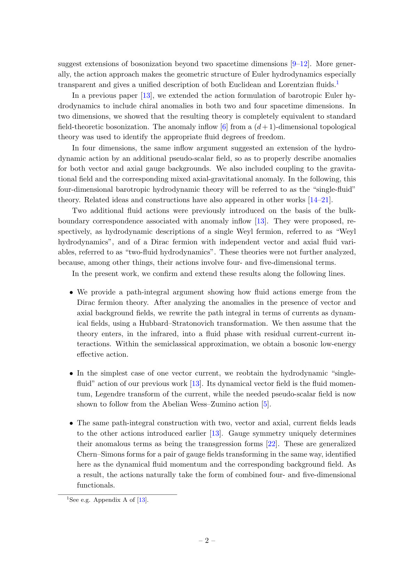
<figcaption class="paper-figure-caption"><b>Fig 2.</b> Low-resolution page preview, page 3</figcaption>
</figure>
<figure class="paper-figure-card">
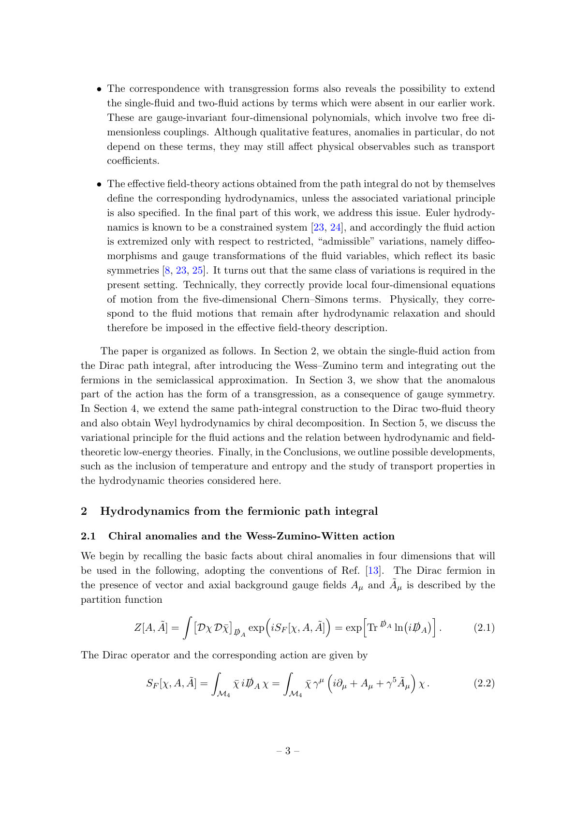
<figcaption class="paper-figure-caption"><b>Fig 3.</b> Low-resolution page preview, page 4</figcaption>
</figure>
<figure class="paper-figure-card">
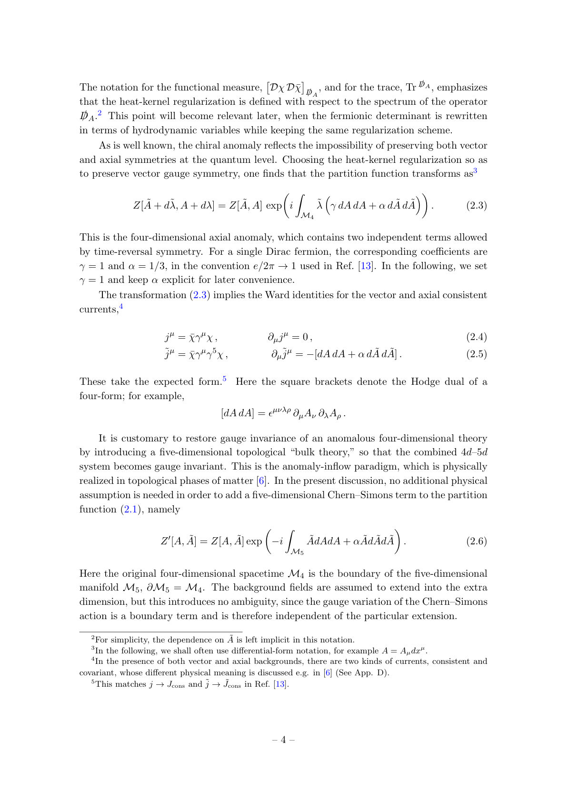
<figcaption class="paper-figure-caption"><b>Fig 4.</b> Low-resolution page preview, page 5</figcaption>
</figure>
<figure class="paper-figure-card">
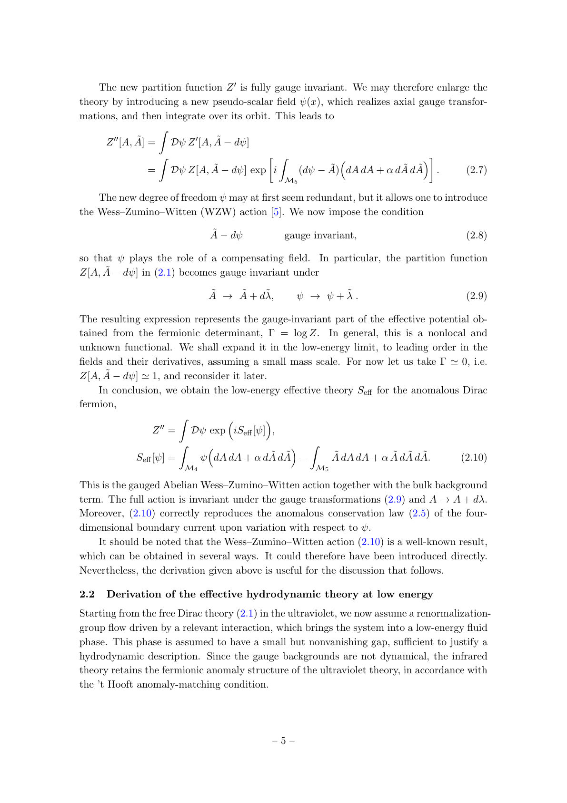
<figcaption class="paper-figure-caption"><b>Fig 5.</b> Low-resolution page preview, page 6</figcaption>
</figure>
</div>

<p><strong>Summary.</strong> This work derives the hydrodynamic action for anomalous fermionic fluids by calculating the low-energy effective action from the Dirac fermion's path integral. It successfully incorporates chiral anomalies using transgression forms derived from higher-dimensional bulk terms. The resulting framework provides a microscopic, quantum field theory justification for the necessary ingredients in anomalous hydrodynamics.</p>
<p><strong>Why it may be interesting.</strong> While focused on condensed matter theory (anomalous hydrodynamics), the rigorous use of path integrals, effective field theories, and symmetry constraints mirrors advanced techniques used in describing quantum many-body systems far from equilibrium.</p>
<details>
<summary>Detailed structure</summary>
<p><strong>Main problem.</strong> To provide a microscopic explanation for incorporating chiral anomalies into the hydrodynamic action formulation derived from fermionic path integrals.</p>
<p><strong>Main result.</strong> The effective low-energy action is shown to correspond to previously proposed anomalous hydrodynamic actions, yielding specific forms for single-fluid and two-fluid systems involving transgression forms.</p>
<p><strong>Method.</strong> The analysis involves integrating out Dirac fermions via the path integral method, utilizing anomaly inflow concepts (5D Chern-Simons terms), and deriving the low-energy effective action through restricted variational principles.</p>
<p><strong>Model / system.</strong> The system models a perfect fluid described by an anomalous Dirac fermion coupled to background vector and axial gauge fields. The theory is analyzed in both single-fluid and two-fluid (vector/axial) regimes.</p>
<p><strong>Key observables.</strong> Hydrodynamic action ($ ext{Seff}$), transgression forms, conserved currents ($J,  ilde{J}$), and the resulting equations of motion derived from restricted variations.</p>
<p><strong>Important parameters / regimes.</strong> Zero temperature limit, residual irrelevant current-current interactions, and coupling constants related to anomaly coefficients ($\alpha$).</p>
<p><strong>Assumptions / limitations.</strong> The derivation assumes an infrared fluid phase where a semiclassical low-energy effective action can be obtained, requiring the use of restricted variations (gauge/diffeomorphism) to define local 4D equations.</p>
<p><strong>Paper structure.</strong> The paper progresses from analyzing the fermionic path integral and obtaining the initial effective action via anomaly inflow. It then details the derivation of the single-fluid and two-fluid actions, culminating in applying restricted variational principles to derive the final local 4D hydrodynamic equations of motion.</p>
</details>
<details>
<summary>Abstract</summary>
<p>The path integral of the Dirac fermion with vector and axial gauge backgrounds is analyzed near the infrared limit in the presence of residual irrelevant current-current interaction. After integrating out fermions, a semiclassical low-energy effective action is obtained, written in terms of currents. Its expression is found to correspond to the hydrodynamic action previously proposed for perfect barotropic fluids with anomalies at zero temperature. This approach also leads to two further hydrodynamic actions to be associated, respectively, with the Weyl fermion, and the Dirac fermion having independent vector and axial currents. These actions feature four- and five-dimensional bulk-boundary terms, owing to anomaly inflow, which are identified as being the so-called transgression forms. These are generalizations of Chern--Simons forms that involve two gauge fields: the dynamical field and the background field. The path-integral argument provides a ``microscopic'' explanation for several ingredients of the action formulation of hydrodynamics that are necessary to incorporate anomalies. It also clarifies the infrared reduction required to pass from the effective field theory to a local hydrodynamic description. This reduction is implemented by considering restricted variations of the action, familiar from hydrodynamics, which at the same time lead to four-dimensional equations of motion from the five-dimensional transgression terms.</p>
</details>
<p><sub><a href="#top">↑ back to top</a></sub></p>

<p><a id="paper-2606.19273"></a></p>
<h3 id="random-matrix-reduction-in-projective-quantum-mechanics-numerical-simulations"><a href="http://arxiv.org/abs/2606.19273v1">Random-matrix reduction in projective quantum mechanics: Numerical simulations</a></h3>
<p><strong>Authors:</strong> Alexey A. Kryukov<br>
<strong>Type:</strong> theory · <strong>Category:</strong> other · <strong>PDF:</strong> <a href="https://arxiv.org/pdf/2606.19273v1">https://arxiv.org/pdf/2606.19273v1</a><br>
<strong>Analysis basis:</strong> full PDF text, analyzed in chunks
<strong>Topic relevance:</strong> <code>measurement-induced transitions</code> <strong>3/5</strong> · <code>quantum measurements</code> <strong>3/5</strong> · <code>non-equilibrium dynamics</code> <strong>2/5</strong> · <code>correlated / nonlocal dissipation</code> <strong>1/5</strong> · <code>driven-dissipative phase transition</code> <strong>1/5</strong> · <code>entanglement &amp; information structure</code> <strong>1/5</strong> · <code>interference shaping light</code> <strong>1/5</strong> · <code>non-equilibrium universality</code> <strong>1/5</strong></p>
<div class="figure-strip-hint">↔ Scroll figures horizontally</div>
<div class="paper-figures-scroll">
<figure class="paper-figure-card">
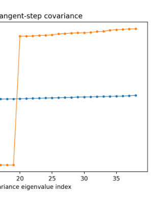
<figcaption class="paper-figure-caption"><b>Fig 1.</b> Fig. 1: Eigenvalues of the covariance matrix of infinitesimal tangent displacements. GUE fills all real tangent directions approximately equally, whereas GOE leaves half of the real tangent directions with zero variance.</figcaption>
</figure>
<figure class="paper-figure-card">
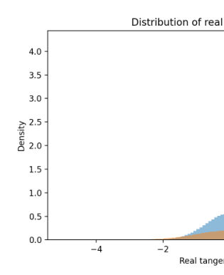
<figcaption class="paper-figure-caption"><b>Fig 2.</b> Fig. 2: Pooled real tangent components for GUE and GOE infinitesimal steps. The spike at zero for GOE reflects the absence of fluctuations in half of the real tangent directions at the chosen projective point.</figcaption>
</figure>
<figure class="paper-figure-card">
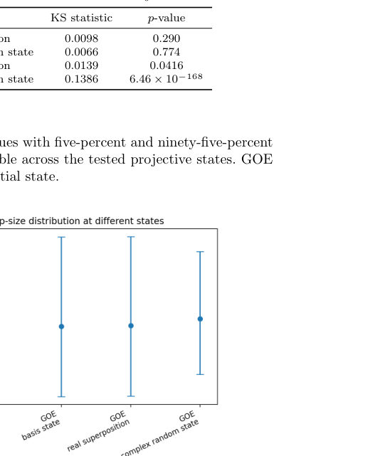
<figcaption class="paper-figure-caption"><b>Fig 3.</b> Fig. 3: Homogeneity check for the distribution of ∥δψ⊥∥2. For GUE, the distribution is independent of the tested initial projective state. For GOE, the distribution changes for a genuinely complex state, reflecting the preferred real structure of the ensemble.</figcaption>
</figure>
<figure class="paper-figure-card">
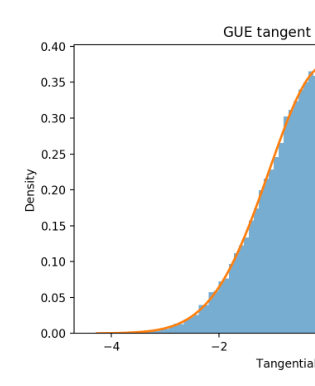
<figcaption class="paper-figure-caption"><b>Fig 4.</b> Fig. 4: Histogram of tangential increments ∆a obtained by projecting GUE-induced state-space increments onto the tangent direction of M σ 1 at a = 0. The distribution agrees with a Gaussian fit.</figcaption>
</figure>
<figure class="paper-figure-card">
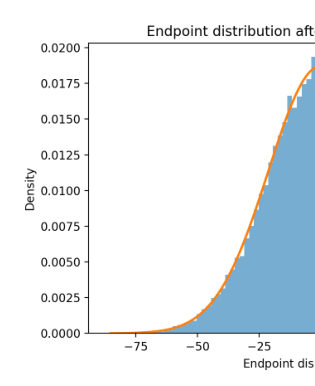
<figcaption class="paper-figure-caption"><b>Fig 5.</b> Fig. 5: Endpoint distribution after 400 projected GUE-induced tangent increments on M σ 1 . The histogram agrees with the Gaussian distribution predicted by Brownian scaling.</figcaption>
</figure>
</div>

<p><strong>Summary.</strong> The paper develops a comprehensive model showing that complex quantum phenomena—from interference patterns to classical motion—are unified as coarse-grained manifestations of stochastic unitary diffusion in projective Hilbert space. By using random matrices, it numerically confirms how measurement and environmental monitoring effectively 'lose' information about the full quantum history, leading to apparent irreversibility.</p>
<p><strong>Why it may be interesting.</strong> This work provides a powerful, unifying mathematical framework connecting fundamental quantum concepts like measurement collapse, decoherence, and classical emergence through the lens of random matrix theory dynamics. It offers concrete numerical tests for abstract theoretical conjectures.</p>
<details>
<summary>Detailed structure</summary>
<p><strong>Main problem.</strong> The research investigates how various quantum phenomena, such as Born rule frequencies, double-slit interference, and classical motion, emerge from the stochastic unitary evolution governed by random matrices in projective Hilbert space.</p>
<p><strong>Main result.</strong> It demonstrates that these diverse physical manifestations are all consistent coarse-grained consequences of a single underlying stochastic unitary mechanism driven by Gaussian Unitary Ensemble Hamiltonians.</p>
<p><strong>Method.</strong> The work relies heavily on numerical simulations to test theoretical predictions, analyzing projected increments, path reversibility, and the behavior of state vectors under measurement constraints.</p>
<p><strong>Model / system.</strong> The core model is projective quantum mechanics ($\mathbb{CP}^{N-1}$), where state evolution is driven by random Hamiltonians drawn from GUE. The analysis extends to multi-particle systems and incorporates detector-defined equivalence classes.</p>
<p><strong>Key observables.</strong> Isotropy/Homogeneity of diffusion, Gaussianity of projected increments, Born frequencies matching hitting probabilities, and the stability of recorded measurement records (Zeno effect analogue).</p>
<p><strong>Important parameters / regimes.</strong> The dimensionality $N$, the ratio of device localization scale to detector resolution ($\delta D/R_D$), and the number of environmental monitoring steps ($n$).</p>
<p><strong>Assumptions / limitations.</strong> Key assumptions include approximating continuous dynamics via discrete random matrix steps, assuming Gaussian state representations on localized manifolds, and defining effective irreversibility through coarse-graining by measurement.</p>
<p><strong>Figures summary.</strong> Figures illustrate the failure of GOE vs. GUE isotropy (Fig 1), Brownian scaling on classical submanifolds (Fig 2/3), matching Born frequencies to random walk hitting probabilities (Fig 8), and showing path loss leading to apparent irreversibility (Figs 41, 43).</p>
<p><strong>Paper structure.</strong> The paper builds logically by first establishing the basic stochastic diffusion properties in projective space (GUE vs GOE), then restricting this motion to classical submanifolds ($M_\sigma$), analyzing boundary effects and measurement outcomes (Born rule/double-slit), extending to multi-particle systems, and finally synthesizing these findings into a unified picture of effective irreversibility.</p>
</details>
<details>
<summary>Abstract</summary>
<p>We present numerical simulations supporting the random-matrix state-reduction framework developed in the companion theoretical paper. The simulations test the main derived features of the model: isotropic diffusion generated by Gaussian Unitary Ensemble Hamiltonians in projective state space, the restriction of this diffusion to Brownian motion on the classical submanifold, Born-rule frequencies for detector-defined outcome classes, and stroboscopic Newtonian motion for macroscopic systems under repeated environmental monitoring. We also compare GUE and GOE random Hamiltonians and show that GOE fails to produce the required isotropic complex projective diffusion. Further simulations examine finite-resolution detector records in the double-slit experiment, Zeno stability of recorded equivalence classes, effective irreversibility from high-dimensional state-space dynamics and loss of path information, and tensor-product particle-device dynamics in the device limit. The results show that microscopic state reduction, stable measurement records, effective irreversibility, and macroscopic classicality can be described as different coarse-grained manifestations of the same stochastic unitary mechanism.</p>
</details>
<p><sub><a href="#top">↑ back to top</a></sub></p>

<p><a id="paper-2606.19331"></a></p>
<h3 id="topological-spectral-form-factor-reveals-emergent-non-hermitian-single-particle-math440math-transitions-from-many-body-quantum-chaos"><a href="http://arxiv.org/abs/2606.19331v1">Topological spectral form factor reveals emergent non-Hermitian single-particle $\mathcal{PT}$ transitions from many-body quantum chaos</a></h3>
<p><strong>Authors:</strong> Daniel Harkin, Chun Y. Leung, Amos Chan<br>
<strong>Type:</strong> theory · <strong>Category:</strong> statistical mechanics · <strong>PDF:</strong> <a href="https://arxiv.org/pdf/2606.19331v1">https://arxiv.org/pdf/2606.19331v1</a><br>
<strong>Analysis basis:</strong> full PDF text, analyzed in chunks
<strong>Topic relevance:</strong> <code>Keldysh / 2PI / non-Gaussian methods</code> <strong>3/5</strong> · <code>driven-dissipative phase transition</code> <strong>3/5</strong> · <code>non-equilibrium universality</code> <strong>2/5</strong> · <code>Kondo &amp; dissipative impurity</code> <strong>1/5</strong> · <code>analog quantum simulation</code> <strong>1/5</strong> · <code>correlated / nonlocal dissipation</code> <strong>1/5</strong> · <code>methods for driven-dissipative</code> <strong>1/5</strong> · <code>non-equilibrium dynamics</code> <strong>1/5</strong></p>
<div class="figure-strip-hint">↔ Scroll figures horizontally</div>
<div class="paper-figures-scroll">
<figure class="paper-figure-card">
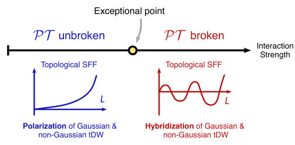
<figcaption class="paper-figure-caption"><b>Fig 1.</b> FIG. 1. Topological SFF and PT transitions. In generic quantum many-body chaotic systems, TopSFF with global swap operator inserted as a spatially extended defect exhibits an emergent PT symmetry breaking transition at a finite in- teraction strength. In the PT unbroken phase, the leading modes are polarised into Gaussian or non-Gaussian temporal domain walls (tDW), producing monotonic exponential scal- ing in system size L at sufficiently large L. In the PT broken phase, the two tDW species hybridise, producing oscillations in L with an exponential envelope. At the exceptional point, mode coalescence renders the effective tDW dynamics non- diagonalizable, producing a Jordan-block...</figcaption>
</figure>
<figure class="paper-figure-card">
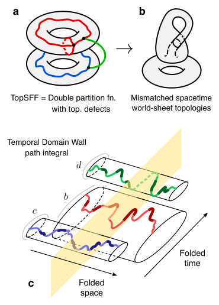
<figcaption class="paper-figure-caption"><b>Fig 2.</b> FIG. 2. Topological SFF as path integral of tempo- ral domain walls. (a) TopSFF is constructed by inserting non-trivial topological defects onto SFF as double partition functions, leading to (b) mismatched spacetime world-sheet topologies. (c) For a (1 + 1)D generic quantum many-body chaotic system, the ensemble-averaged TopSFF with a spa- tially extended global swap defect exactly maps to an effective (3 + 1)D path integral of emergent tDW (yellow slice). The tDW has two species, Gaussian and non-Gaussian (lighter and darker colours), and is specified by three folded-time loop co- ordinates while propagating along space as a non-Hermitian single particle.</figcaption>
</figure>
<figure class="paper-figure-card">
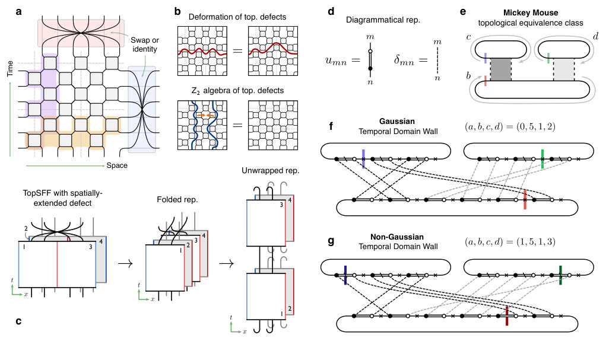
<figcaption class="paper-figure-caption"><b>Fig 3.</b> FIG. 3. Temporal domain walls and Mickey Mouse diagrams. (a) A global swap defect or the identity operator may be inserted along the spatial or temporal direction of the worldsheet describing a quantum many-body system evolved by local unitary gates. (b) Topological invariance allows local deformations of the defect line after folding described in (c), while two swap defects fuse to the identity, realizing the Z2 algebra. (c) For the TopSFF with a spatially extended global swap defect, worldsheets 3 and 4 are folded onto worldsheets 1 and 2 along the parity inversion axes (red and blue), so that parity-related degrees of freedom are stacked. Unwrapping each folded site in the time direction...</figcaption>
</figure>
<figure class="paper-figure-card">
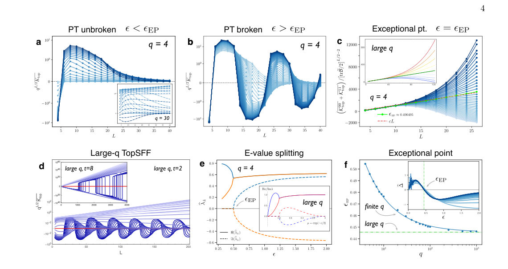
<figcaption class="paper-figure-caption"><b>Fig 4.</b> FIG. 4. Finite-q and large-q signatures of TopSFF PT transition. We exactly compute TopSFF in the k = (π, π, 0) sector, with finite-q data at t = 2 and with large-q results for arbitrary t in the pre-Heisenberg regime. Darker lines denote stronger interaction strength. (a) In the PT unbroken phase, the TopSFF at q = 4 displays exponential scaling with system size L at sufficiently large L. The inset in (a) shows that TopSFF can exponentially increase for sufficiently large q, e.g. q = 30, consistent with the large-q spectrum of TopSFF in (e) and [36]. (b) In the PT broken phase, TopSFF at q = 4 exhibits oscillatory behaviour with an exponential envelope. (c) At the exceptional point,...</figcaption>
</figure>
<figure class="paper-figure-card">
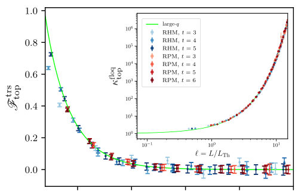
<figcaption class="paper-figure-caption"><b>Fig 5.</b> FIG. 5. Finite-q TopSFF collapse for temporally ex- tended defects. Topological free energy F trs top of a tempo- rally extended global swap defect in the TRS RPM at q = 3 (red), and the TRS Random Hamiltonian Model (RHM) [36] at q = 2 (blue), compared with the large-q scaling form (green). Inset: finite-q collapse of the TopSFF Kfloq top with temporally extended translation defect for the corresponding Floquet models (without TRS).</figcaption>
</figure>
</div>

<p><strong>Summary.</strong> The paper introduces and analyzes the Topological Spectral Form Factor (TopSFF) as a probe for global quantum properties in chaotic many-body systems. By mapping this observable to an effective non-Hermitian single-particle model, the authors precisely locate and characterize a $\mathcal{PT}$ symmetry breaking transition at a finite interaction strength. This methodology offers a universal signature of underlying spectral phase transitions.</p>
<p><strong>Why it may be interesting.</strong> This work provides a powerful, universal diagnostic tool ($  ext{TopSFF}$) to detect fundamental symmetries like $\mathcal{PT}$ symmetry breaking in complex quantum chaotic systems without needing explicit knowledge of the full many-body Hamiltonian dynamics.</p>
<details>
<summary>Detailed structure</summary>
<p><strong>Main problem.</strong> The study investigates how topological defects inserted into quantum partition functions can probe global properties, specifically mapping the Topological Spectral Form Factor (TopSFF) to an emergent non-Hermitian single-particle problem.</p>
<p><strong>Main result.</strong> The TopSFF reveals a clear signature of $\mathcal{PT}$ symmetry breaking in the effective dynamics: monotonic exponential scaling below a critical interaction strength ($\epsilon_{	ext{EP}}$), and oscillations above it, with linear enhancement at $\epsilon_{	ext{EP}}$.</p>
<p><strong>Method.</strong> The authors use diagrammatic techniques, mapping the TopSFF to an emergent $(3+1)$D temporal domain wall (tDW) problem whose dynamics are analyzed via a transfer matrix approach.</p>
<p><strong>Model / system.</strong> The analysis is applied to generic 1D many-body chaotic systems modeled by random quantum circuits (e.g., Random Phase Model). The key diagnostic tool is the TopSFF, which probes mismatched spacetime world-sheet topologies.</p>
<p><strong>Key observables.</strong> Topological Spectral Form Factor ($    ext{TopSFF}$), effective discriminant ($b_\Delta$), and scaling functions for topological free energy differences ($\Delta F_{ ext{top}}$).</p>
<p><strong>Important parameters / regimes.</strong> Interaction strength ($\epsilon$) relative to the critical point ($\epsilon_{	ext{EP}}$), system size ($L$), and defect type (global swap vs. time translation).</p>
<p><strong>Assumptions / limitations.</strong> The analysis relies on mapping the complex many-body problem onto an effective non-Hermitian single-particle dynamics, particularly in the large-$q$ limit.</p>
<p><strong>Figures summary.</strong> Figures illustrate the three distinct regimes of $ ext{TopSFF}$ vs. interaction strength ($\epsilon$), showing monotonic growth, oscillations, and linear enhancement at the exceptional point. Other figures confirm universal scaling collapses for both SFF and TopSFF in different Thouless limits.</p>
<p><strong>Paper structure.</strong> The paper systematically develops the concept by defining the $    ext{TopSFF}$ using topological defects, deriving its mapping to a tDW problem, analyzing the resulting non-Hermitian Hamiltonian's spectral properties (eigenvalues/discriminant), and finally confirming these findings through multiple scaling limits and finite-$q$ numerical checks.</p>
</details>
<details>
<summary>Abstract</summary>
<p>In equilibrium physics, topological defect insertions in quantum and classical partition functions provide non-perturbative probes of phase transitions beyond local observables. In non-equilibrium physics, the spectral form factor provides a minimal probe of universal quantum dynamics, and admits a representation as a product of two partition functions at imaginary inverse temperature. We define the topological spectral form factor (TopSFF) by inserting topological defects acting non-trivially on the doubled partition functions, producing mismatched spacetime world-sheet topologies. For the minimal $\mathbb{Z}_2$ spatially extended defect, implemented by the global swap operator, we derive an exact mapping of the TopSFF of a generic 1D many-body chaotic system to an emergent $(3+1)$D non-Hermitian single-particle problem describing a temporal domain wall (tDW). We show analytically that the effective tDW dynamics undergoes a $\mathcal{PT}$ symmetry breaking transition at a finite interaction strength $ε_{\mathrm{EP}}$: below $ε_{\mathrm{EP}}$, the leading modes are polarized into Gaussian or non-Gaussian tDW sectors and the TopSFF varies monotonically and exponentially with system size; above $ε_{\mathrm{EP}}$, the tDW sectors hybridize and the TopSFF oscillates with system size; at the exceptional point $ε_{\mathrm{EP}}$, Jordan non-diagonality produces a linear-in-system-size enhancement. For temporally extended topological defects, we derive exact universal scaling forms for the TopSFF free energy in systems with time reversal or time translation symmetry, and verify them numerically in independent models.</p>
</details>
<p><sub><a href="#top">↑ back to top</a></sub></p>

<p><a id="paper-2606.19188"></a></p>
<h3 id="when-isolated-quantum-systems-appear-classical"><a href="http://arxiv.org/abs/2606.19188v1">When Isolated Quantum Systems Appear Classical</a></h3>
<p><strong>Authors:</strong> Thiago R. de Oliveira, Pedro S. Correia, Tiago Debarba, Gabriel Dias Carvalho, Raúl O. Vallejos, Fernando de Melo<br>
<strong>Type:</strong> theory · <strong>Category:</strong> statistical mechanics · <strong>PDF:</strong> <a href="https://arxiv.org/pdf/2606.19188v1">https://arxiv.org/pdf/2606.19188v1</a><br>
<strong>Analysis basis:</strong> full PDF text, analyzed in chunks
<strong>Topic relevance:</strong> <code>non-equilibrium dynamics</code> <strong>3/5</strong> · <code>entanglement &amp; information structure</code> <strong>2/5</strong> · <code>non-equilibrium universality</code> <strong>2/5</strong> · <code>scars &amp; prethermalization</code> <strong>2/5</strong> · <code>correlated / nonlocal dissipation</code> <strong>1/5</strong> · <code>driven-dissipative phase transition</code> <strong>1/5</strong> · <code>measurement-induced transitions</code> <strong>1/5</strong> · <code>methods for driven-dissipative</code> <strong>1/5</strong></p>
<div class="figure-strip-hint">↔ Scroll figures horizontally</div>
<div class="paper-figures-scroll">
<figure class="paper-figure-card">
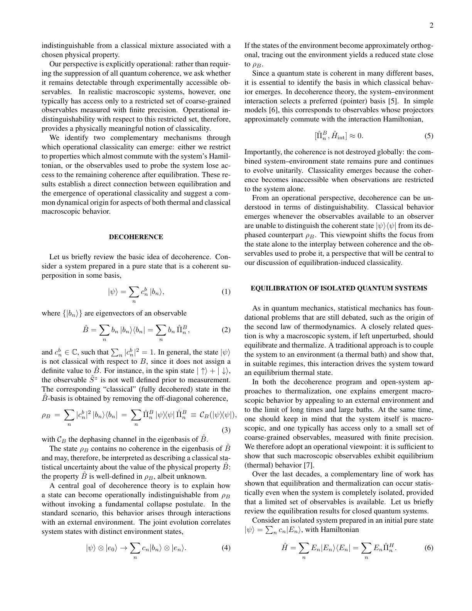
<figcaption class="paper-figure-caption"><b>Fig 1.</b> Low-resolution page preview, page 2</figcaption>
</figure>
<figure class="paper-figure-card">
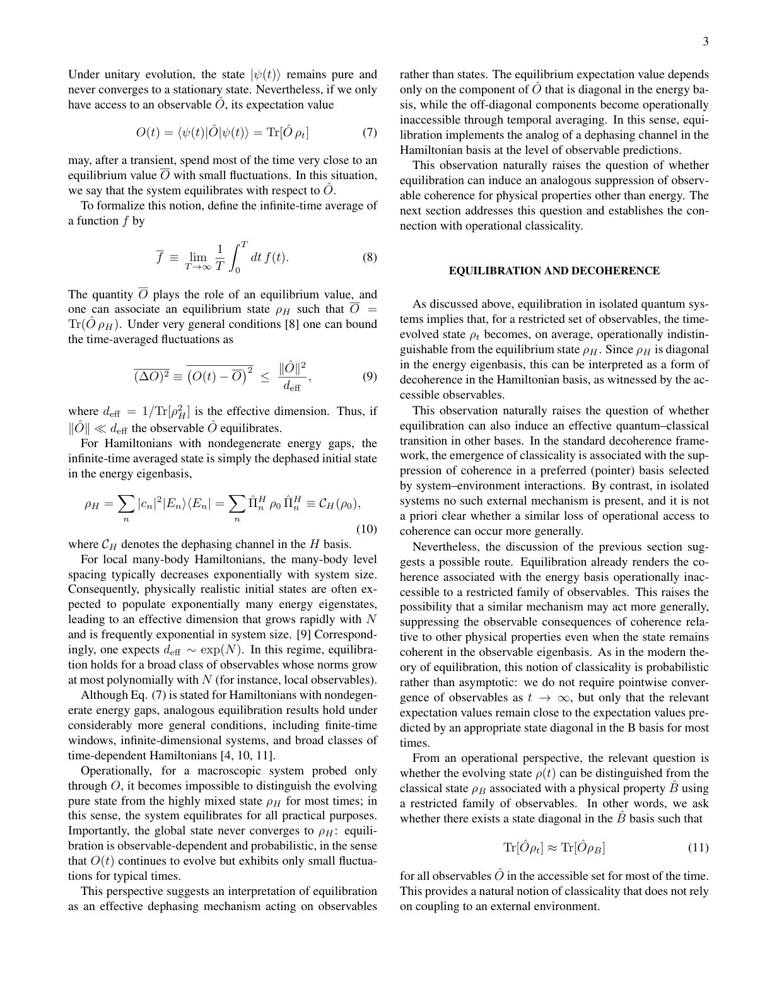
<figcaption class="paper-figure-caption"><b>Fig 2.</b> Low-resolution page preview, page 3</figcaption>
</figure>
<figure class="paper-figure-card">
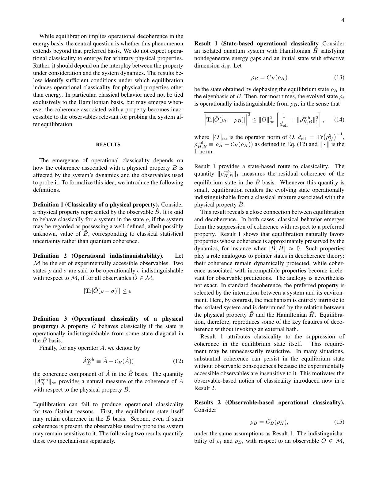
<figcaption class="paper-figure-caption"><b>Fig 3.</b> Low-resolution page preview, page 4</figcaption>
</figure>
<figure class="paper-figure-card">
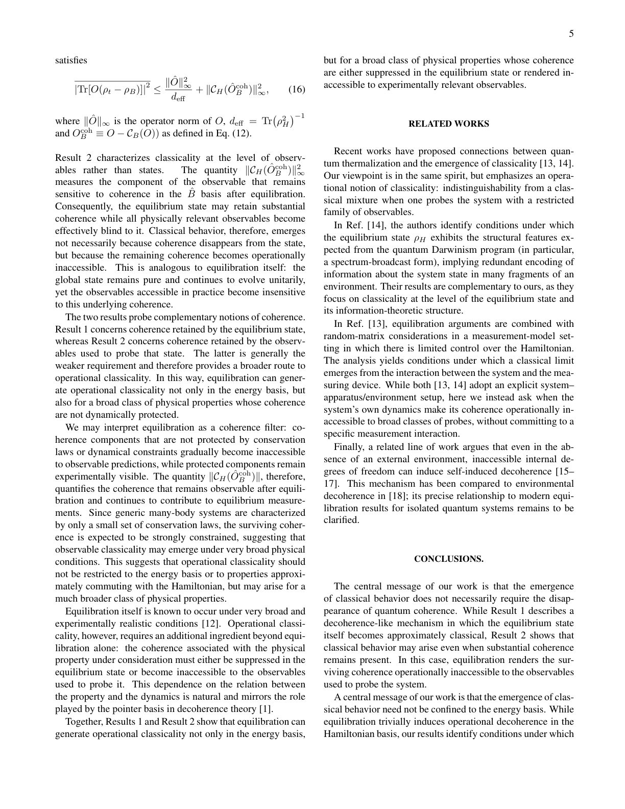
<figcaption class="paper-figure-caption"><b>Fig 4.</b> Low-resolution page preview, page 5</figcaption>
</figure>
<figure class="paper-figure-card">
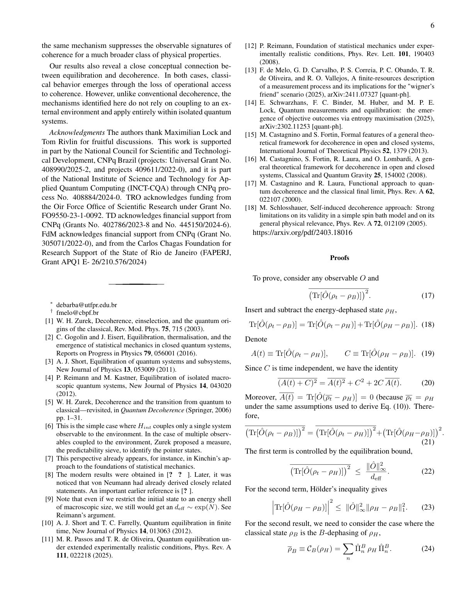
<figcaption class="paper-figure-caption"><b>Fig 5.</b> Low-resolution page preview, page 6</figcaption>
</figure>
</div>

<p><strong>Summary.</strong> This paper explores how isolated quantum systems can spontaneously exhibit classical behavior through intrinsic equilibration processes. It establishes that operational classicality arises when coherence becomes inaccessible to measurements, rather than requiring its physical disappearance. This provides a direct theoretical connection between thermalization in closed systems and the origin of classicality.</p>
<p><strong>Why it may be interesting.</strong> This work provides a fundamental theoretical link between two major open problems—thermalization and quantum-to-classical transition—within the context of closed quantum systems, challenging the necessity of external environments for classical behavior.</p>
<details>
<summary>Detailed structure</summary>
<p><strong>Main problem.</strong> The paper investigates whether the intrinsic equilibration mechanism observed in fully isolated quantum systems can also account for the emergence of classical behavior (the quantum-to-classical transition).</p>
<p><strong>Main result.</strong> Operational classicality can emerge even when substantial coherence remains in the equilibrium state, provided that this coherence becomes operationally inaccessible to measurements.</p>
<p><strong>Method.</strong> The authors derive sufficient conditions for operational classicality by analyzing time-averaged expectation values and bounding fluctuations using concepts derived from equilibration theory.</p>
<p><strong>Model / system.</strong> The study considers isolated quantum systems evolving unitarily under a Hamiltonian H, focusing on the transition from pure state evolution to behavior indistinguishable from a classical mixture.</p>
<p><strong>Key observables.</strong> Expectation values of observables $\langle \hat{O} 
angle(t)$, operational distinguishability between states ($
ho$ vs. $
ho_B$), and coherence components ($|
ho_{    ext{coh}}^{H,B}|$).</p>
<p><strong>Important parameters / regimes.</strong> The time-average limit ($T 	o \infty$) and the effective dimension ($d_{	ext{eff}}$) governing fluctuation bounds.</p>
<p><strong>Assumptions / limitations.</strong> The analysis is operational, focusing on indistinguishability with respect to a restricted set of coarse-grained observables; it assumes specific mathematical relationships between state evolution and equilibrium states.</p>
<p><strong>Paper structure.</strong> The paper builds from the established understanding of thermalization in isolated systems to derive rigorous bounds connecting this equilibration process directly to the conditions required for operational classicality, showing two complementary routes for this emergence.</p>
</details>
<details>
<summary>Abstract</summary>
<p>The emergence of classical behavior and the origin of thermal equilibrium are two central problems in the foundations of physics. In the standard accounts, both phenomena are typically explained through interactions with an external environment: decoherence suppresses quantum interference, while coupling to a thermal bath drives relaxation toward equilibrium. Over the last decades, however, it has become clear that equilibration and thermalization can arise even in fully isolated quantum systems, in the operational sense that the expectation values of relevant observables remain close to equilibrium values for most of the time. Here, we ask whether the same intrinsic equilibration mechanism can also account for the emergence of classical behavior. Using rigorous bounds on equilibration in closed systems, we derive sufficient conditions under which a time-evolved pure state becomes, for most times, operationally indistinguishable from a classical mixture associated with a chosen physical property. We identify two complementary routes to such operational classicality: either the chosen property almost commutes with the system Hamiltonian or the observables used to probe the system lose access to the remaining coherence after equilibration. Our results show that classical behavior need not be confined to the energy basis and may emerge even when substantial coherence remains present in the equilibrium state. This establishes a direct connection between two foundational questions: the origin of thermalization in isolated quantum systems and the quantum-to-classical transition</p>
</details>
<p><sub><a href="#top">↑ back to top</a></sub></p>

<p><a id="paper-2606.18401"></a></p>
<h3 id="negative-diffusivity-of-excitons-in-electron-hole-plasmas"><a href="http://arxiv.org/abs/2606.18401v1">Negative diffusivity of excitons in electron-hole plasmas</a></h3>
<p><strong>Authors:</strong> H. Terças, V. N. Mantsevich<br>
<strong>Type:</strong> theory · <strong>Category:</strong> other · <strong>PDF:</strong> <a href="https://arxiv.org/pdf/2606.18401v1">https://arxiv.org/pdf/2606.18401v1</a><br>
<strong>Analysis basis:</strong> full PDF text, analyzed in chunks
<strong>Topic relevance:</strong> <code>driven-dissipative phase transition</code> <strong>3/5</strong> · <code>non-equilibrium dynamics</code> <strong>3/5</strong> · <code>non-equilibrium universality</code> <strong>2/5</strong> · <code>Keldysh / 2PI / non-Gaussian methods</code> <strong>1/5</strong> · <code>analog quantum simulation</code> <strong>1/5</strong> · <code>correlated / nonlocal dissipation</code> <strong>1/5</strong> · <code>methods for driven-dissipative</code> <strong>1/5</strong></p>
<div class="figure-strip-hint">↔ Scroll figures horizontally</div>
<div class="paper-figures-scroll">
<figure class="paper-figure-card">
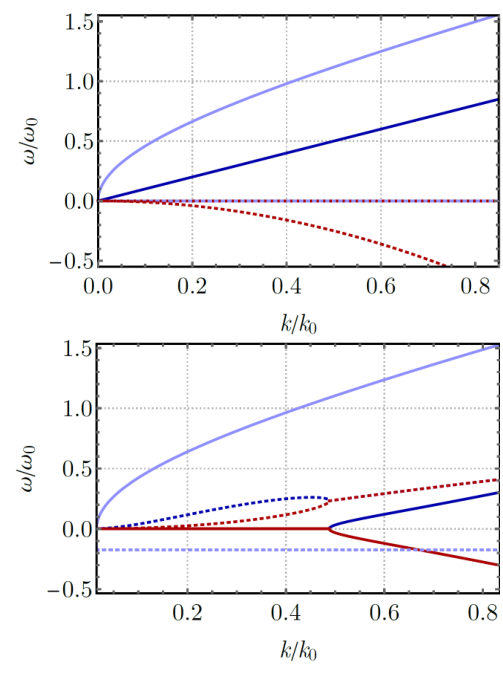
<figcaption class="paper-figure-caption"><b>Fig 1.</b> FIG. 1. Dispersion relation of the exciton-plasma system, in units of k0 = e2n0/(2meDX) and ω0 = DXk2 0. Top panel: normal modes in the absence of exciton-plasma coupling, γe = γh = 0, featuring a diffusive mode (ω1, red line), plasma acoustic (ω2, light blue line) and plasma optical (ω3, dark blue line). Right panel: the same modes as obtained for γe = γh = 0.1γX, and ¯vX = 2.8vth. In all the cases, we have assumed a diffusion constant of DX = 0.9v2 th/ωp.</figcaption>
</figure>
<figure class="paper-figure-card">
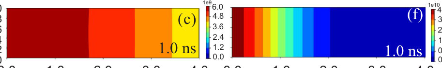
<figcaption class="paper-figure-caption"><b>Fig 2.</b> FIG. 2. Diffusion dynamics in a quasi-one-dimensional channel. Normal diffusive transport, corresponding to eDX &gt; 0, where the exciton density profile broadens in time and the peak amplitude decreases, in agreement with the purely dissipative regime described by Eq. (9).</figcaption>
</figure>
<figure class="paper-figure-card">
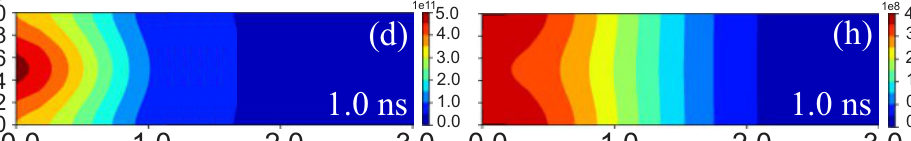
<figcaption class="paper-figure-caption"><b>Fig 3.</b> FIG. 3. Diffusion dynamics in a quasi-one-dimensional channel. Negative diffusion regime, corresponding to eDX &lt; 0, where the exciton density develops a localized enhancement and increases in amplitude, signaling a dynamical instability. This behavior originates from the hybridization between the exciton diffusive mode and the acoustic plasma mode, as described by Eq. (28), and provides a real-space manifestation of the gain predicted by the dispersion relation in Fig. 1.</figcaption>
</figure>
</div>

<p><strong>Summary.</strong> This paper develops a hydrodynamic model for exciton transport coupled to an electron-hole plasma in 2D semiconductors. It shows that while simple collision models predict positive diffusion, including the inertia of the plasma leads to hybridization with acoustic plasmon modes. This coupling generates a dynamical instability, manifesting as a theoretically predicted negative effective exciton diffusivity.</p>
<p><strong>Why it may be interesting.</strong> While focused on condensed matter transport, the mechanism—where collective plasma modes drive a non-dissipative instability that modifies particle transport coefficients—is analogous to instabilities studied in open quantum systems or driven many-body dynamics.</p>
<details>
<summary>Detailed structure</summary>
<p><strong>Main problem.</strong> The study investigates exciton transport dynamics, specifically focusing on the theoretical conditions under which an effective negative diffusion coefficient can arise in two-dimensional semiconductors.</p>
<p><strong>Main result.</strong> Negative exciton diffusivity is predicted to occur when the system's collective plasma oscillations (plasmons) couple strongly with the slow excitonic motion, leading to a dynamical instability rather than simple nonlinear effects.</p>
<p><strong>Method.</strong> The authors developed and utilized a minimal hydrodynamic framework by treating excitons, electrons, and holes as coupled fluids, analyzing the resulting dispersion relations in Fourier space.</p>
<p><strong>Model / system.</strong> The physical system is an exciton-electron-hole plasma within 2D semiconductors (like TMDs). The model treats the three species using coupled fluid dynamics equations, moving from simple collision models to full self-consistent analysis incorporating plasmons.</p>
<p><strong>Key observables.</strong> Effective exciton diffusivity ($D_{eff}^X$), dispersion relation ($\omega$), and the sign of the effective diffusion coefficient (positive for damping, negative for instability).</p>
<p><strong>Important parameters / regimes.</strong> Plasma inertia, collective charge oscillation frequency ($\omega_p$), collision rates ($\gamma_X, \gamma_p$), and the degree of coupling between excitons and plasma modes.</p>
<p><strong>Assumptions / limitations.</strong> Initial analyses assume quasi-neutrality or symmetric effective masses; the key result requires incorporating plasmons beyond simple diffusive plasma dynamics.</p>
<p><strong>Figures summary.</strong> Figure 2 illustrates normal, dissipative diffusion (positive $D_{eff}^X$), while Figure 3 demonstrates the negative diffusion regime characterized by localized density enhancement and growing amplitude due to hybridization with the acoustic plasma mode.</p>
<p><strong>Paper structure.</strong> The paper progresses from analyzing simple collisional regimes where diffusivity remains positive, through incorporating full self-consistent dynamics involving plasmons, culminating in the derivation of the instability condition leading to negative effective diffusivity.</p>
</details>
<details>
<summary>Abstract</summary>
<p>We develop a minimal hydrodynamic framework to describe exciton transport in the presence of an electron hole plasma in 2D semiconductors. Treating excitons, electrons, and holes as coupled fluids, we show that exciton diffusion is strongly renormalized by momentum exchange with the plasma. In the collisional regime, mutual diffusion leads to a nontrivial redistribution of transport coefficients but preserves the positivity of the exciton diffusivity. In contrast, when plasma inertia and collective charge oscillations are accounted for, the exciton diffusive mode hybridizes with acoustic plasma modes, giving rise to a dynamical instability manifested as an effective negative diffusion coefficient. We demonstrate that this instability originates from the nonequilibrium coupling between slow excitons and fast plasma degrees of freedom, rather than from nonlinear diffusion or thermodynamic effects. Our results provide a unified physical mechanism for negative exciton diffusivity reported in recent experiments and establish collective plasma dynamics as a key control parameter of exciton transport in 2D materials.</p>
</details>
<p><sub><a href="#top">↑ back to top</a></sub></p>

<p><a id="paper-2606.19196"></a></p>
<h3 id="blind-symmetry-matching-in-quantum-states-with-application-to-shot-count-reduction"><a href="http://arxiv.org/abs/2606.19196v1">Blind Symmetry Matching in Quantum States with Application to Shot-Count Reduction</a></h3>
<p><strong>Authors:</strong> Mitchell A. Thornton<br>
<strong>Type:</strong> theory · <strong>Category:</strong> quantum information and computing · <strong>PDF:</strong> <a href="https://arxiv.org/pdf/2606.19196v1">https://arxiv.org/pdf/2606.19196v1</a><br>
<strong>Analysis basis:</strong> full PDF text, analyzed in chunks
<strong>Topic relevance:</strong> <code>quantum measurements</code> <strong>3/5</strong> · <code>measurement-induced transitions</code> <strong>2/5</strong> · <code>analog quantum simulation</code> <strong>1/5</strong> · <code>entanglement &amp; information structure</code> <strong>1/5</strong> · <code>methods for driven-dissipative</code> <strong>1/5</strong> · <code>non-equilibrium dynamics</code> <strong>1/5</strong></p>
<div class="figure-strip-hint">↔ Scroll figures horizontally</div>
<div class="paper-figures-scroll">
<figure class="paper-figure-card">
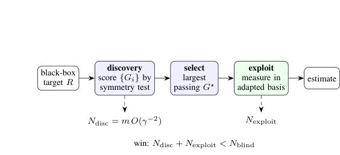
<figcaption class="paper-figure-caption"><b>Fig 1.</b> Fig. 1. The blind-matching pipeline. Discovery scores a candidate family by a symmetry test (weak twirl or strong sector projection), the selection rule takes the largest passing group, and exploitation reads the target in its symmetry- adapted basis. Here R is the unknown state, or its covariance, whose carried symmetry is to be discovered. Every shot, discovery included, is charged against the structure-blind baseline.</figcaption>
</figure>
<figure class="paper-figure-card">
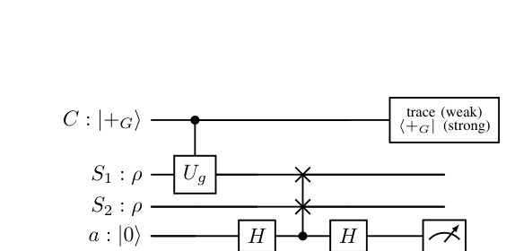
<figcaption class="paper-figure-caption"><b>Fig 2.</b> Fig. 2. The discovery circuit. A controlled group action twirls one copy of the target; discarding the group register C realizes the weak twirl (incoherent average), while post-selecting it on |+G⟩realizes the strong twirl (coherent average, heralded by the sector weight). The SWAP test on ancilla a returns the matching score. The controlled twirl and Hilbert-Schmidt test are in the symmetry-testing family of [8]; amplitude estimation accelerates the readout. For a cyclic group |+G⟩= H⊗n |0⟩and the controlled action is one modular adder.</figcaption>
</figure>
<figure class="paper-figure-card">
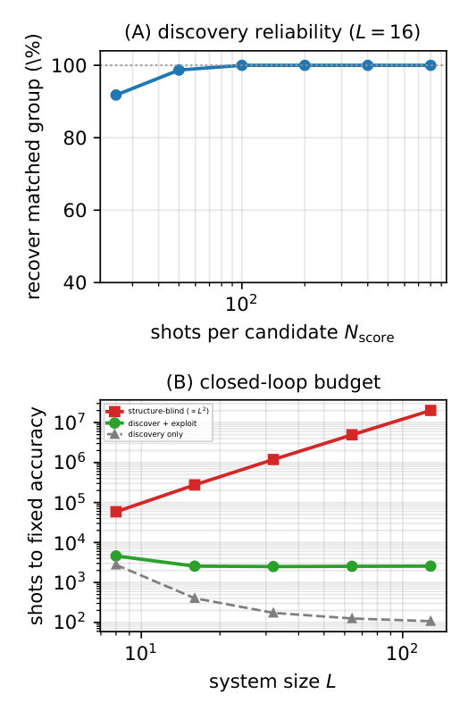
<figcaption class="paper-figure-caption"><b>Fig 3.</b> Fig. 3. Weak-mode loop on momentum readout. (A) Discovery recovers the matched group from a few symmetry-test shots per candidate. (B) The structure-blind cost grows as L2 while the total pipeline cost stays nearly flat; discovery cost alone falls with L.</figcaption>
</figure>
<figure class="paper-figure-card">
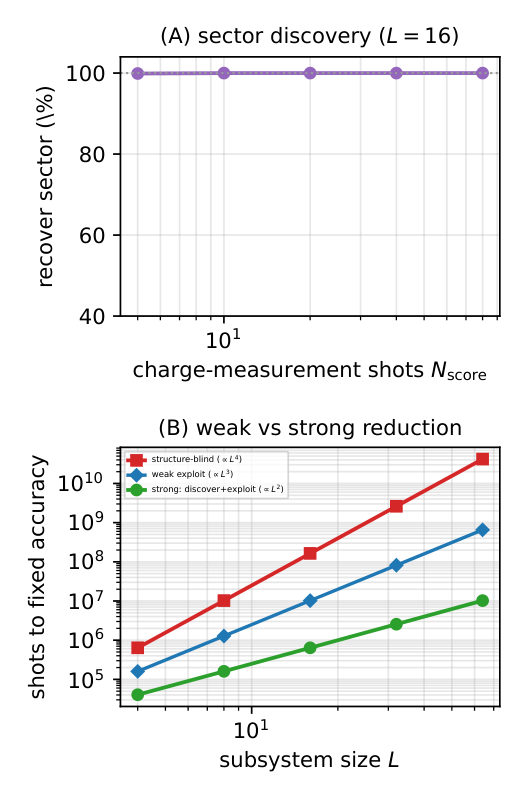
<figcaption class="paper-figure-caption"><b>Fig 4.</b> Fig. 4. Strong-mode loop on the two-system target. (A) The occupied sector is recovered from a handful of charge-measurement shots. (B) Structure- blind cost grows as L4, weak exploitation as L3, and strong discovery-plus- exploitation as L2; the strong mode buys an extra factor of L over the weak mode.</figcaption>
</figure>
</div>

<p><strong>Summary.</strong> This paper introduces Blind Symmetry Matching, an advanced technique to estimate unknown statistical properties in quantum computations by first discovering the underlying symmetry group from measurement data. By selecting and exploiting this discovered symmetry, the method significantly reduces the required number of measurements (shots) compared to structure-blind estimation techniques.</p>
<p><strong>Why it may be interesting.</strong> It provides a powerful, general-purpose primitive for quantum algorithm design that moves beyond assuming prior knowledge of system symmetries, which is crucial for applying quantum computation to complex physical systems where symmetries are emergent or unknown.</p>
<details>
<summary>Detailed structure</summary>
<p><strong>Main problem.</strong> To develop a method, called Blind Symmetry Matching, that reduces the required number of measurement shots for estimating unknown statistical quantities in quantum computations when the underlying symmetry is not known beforehand.</p>
<p><strong>Main result.</strong> The proposed pipeline successfully discovers an unknown symmetry group and exploits it to achieve significant shot count reductions, with the strong confinement mode showing superior scaling ($\propto L^2$) compared to structure-blind methods.</p>
<p><strong>Method.</strong> The method involves a three-step process: (1) Discovery of candidate symmetries via specialized tests (weak/strong twirls), (2) Selection of the largest passing group ($G^\star$), and (3) Exploitation by measuring the target observable in the symmetry-adapted basis.</p>
<p><strong>Model / system.</strong> The framework is general over finite groups, demonstrated using quantum computations on systems like an L-site ring or two interacting systems. The target quantity to be estimated is a statistical expectation value of an operator $R$.</p>
<p><strong>Key observables.</strong> Matching Score ($s_T(R)$), Shot Count Reduction Factor, Weak/Strong Twirl measurements.</p>
<p><strong>Important parameters / regimes.</strong> System size ($L$), group order ($|G|$), and the ratio between discovery cost and exploitation savings.</p>
<p><strong>Assumptions / limitations.</strong> The target quantity must be statistical (an expectation value or distribution) rather than a single deterministic outcome. The discovery overhead must be less than the shot savings achieved by exploiting the symmetry.</p>
<p><strong>Figures summary.</strong> Figures illustrate the overall blind-matching pipeline (Discovery $    o$ Selection $  o$ Exploitation), detailing circuits for weak vs. strong twirls, and comparing scaling costs ($L^4$ vs $L^3$ vs $L^2$) across different modes.</p>
<p><strong>Paper structure.</strong> The paper introduces the problem of unknown symmetry estimation, details the mathematical framework involving weak (commutation) and strong (confinement) symmetry tests, proves the selection rule is unbiased, and concludes with seeded demonstrations showing exponential resource savings.</p>
</details>
<details>
<summary>Abstract</summary>
<p>Measuring a quantum computation in a basis adapted to a symmetry it carries reduces the repeated measurements, commonly referred to as ``shots'', needed to read a statistical answer. Detecting the symmetry a quantum state carries has many uses: certifying a claimed symmetry, identifying a conserved-charge sector, flagging symmetry-breaking as an error signature, and selecting a compression or readout basis; shot-count reduction is developed here as one exemplary case. Existing methods assume the symmetry is known in advance; we remove that assumption. When it is unknown, the carried symmetry is discovered from the data by a symmetry test that scores candidate groups, and the largest passing group is exploited as the measurement basis. We state the pipeline precisely, prove the selection rule is unbiased, and charge discovery in full. Two conditions are treated, both detected by the same score with a different projection: a weak condition, commutation with the representation, and a strong condition, confinement to a single charge sector, the distinction drawn in the quantum-reference-frame literature. A single circuit, a controlled twirl followed by a SWAP test, discovers both: discarding the group register tests the weak condition, post-selecting it the strong one. The framework is general over finite groups, with cyclic (Fourier), dihedral, and symmetric-group (Schur-Weyl) examples; strong confinement to the symmetric, or Dicke, subspace is an exponential reduction. Seeded demonstrations show the loop wins net of discovery: weak matching on momentum readout reduces shots by a factor widening from ten to several thousand, and strong matching on a two-system target by a further factor of the subsystem size. Blind symmetry matching is a practical primitive for the common case where the matched basis cannot be written down in advance.</p>
</details>
<p><sub><a href="#top">↑ back to top</a></sub></p>

<p><a id="paper-2606.18871"></a></p>
<h3 id="sensitive-endoscopic-diamond-magnetometer-for-non-contact-sensing-in-confined-environments"><a href="http://arxiv.org/abs/2606.18871v1">Sensitive endoscopic diamond magnetometer for non-contact sensing in confined environments</a></h3>
<p><strong>Authors:</strong> Johannes Wesseler, Roland Nagy<br>
<strong>Type:</strong> experiment · <strong>Category:</strong> other · <strong>PDF:</strong> <a href="https://arxiv.org/pdf/2606.18871v1">https://arxiv.org/pdf/2606.18871v1</a><br>
<strong>Analysis basis:</strong> full PDF text, analyzed in chunks
<strong>Topic relevance:</strong> <code>spintronics-quantum-optics interface</code> <strong>3/5</strong> · <code>QC/QI experiment</code> <strong>2/5</strong> · <code>quantum measurements</code> <strong>2/5</strong> · <code>exotic spin models in light-matter</code> <strong>1/5</strong> · <code>quantum optics experiment</code> <strong>1/5</strong></p>
<div class="figure-strip-hint">↔ Scroll figures horizontally</div>
<div class="paper-figures-scroll">
<figure class="paper-figure-card">
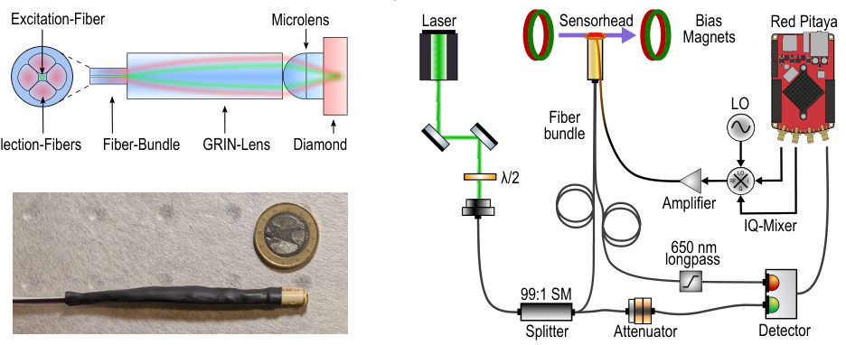
<figcaption class="paper-figure-caption"><b>Fig 1.</b> Figure 1: Endoscopic NV magnetometer architecture. a, Schematic of the endoscopic sensor head optics. Excitation light is delivered through the central fiber of the fused fiber bundle and focused into the diamond by the micro-objective, while NV fluorescence is collected through the four outer fibers. b, Photograph of the packaged 6 mm diameter sensor head next to a 1-euro coin for scale. c, Schematic of the complete measurement setup. The sensor receives microwave control signals from the FPGA-based backend, while the laser and photodetector are connected through the fiber bundle. Detection is performed with an auto-balanced photodetector for laser-noise cancellation.</figcaption>
</figure>
<figure class="paper-figure-card">
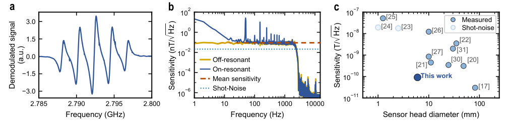
<figcaption class="paper-figure-caption"><b>Fig 2.</b> Figure 2: Sensitivity characterization of the endoscopic NV magnetometer. a, Lock- in ODMR spectrum for the [100] bias-field alignment of the addressed ms = 0 ↔ms = −1 transition using simultaneous excitation of the 14N hyperfine triplet. The central zero crossing is used as the operating point for magnetic-field and sensitivity measurements. b, Magnetic- field amplitude spectral density for the [100] bias-field alignment (blue). The brown dashed line indicates the mean sensitivity of 91 pT/ √</figcaption>
</figure>
<figure class="paper-figure-card">
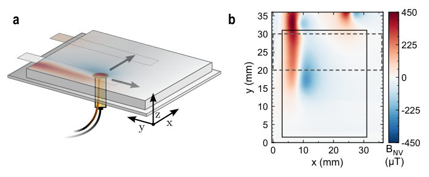
<figcaption class="paper-figure-caption"><b>Fig 3.</b> Figure 3: Magnetic scanning of a lithium-ion pouch cell. a, Measurement geometry. The pouch cell is translated across the fixed endoscopic sensor head with a motorized stage while the sensor measures the magnetic field. b, Zero-current map of the field BNV with the battery resting at 3.7 V. The black outline marks the cell body, and the grey dashed box indicates the region scanned during charge and discharge measurements. The strong vertical feature on the left arises from the ferromagnetic nickel anode tab.</figcaption>
</figure>
<figure class="paper-figure-card">
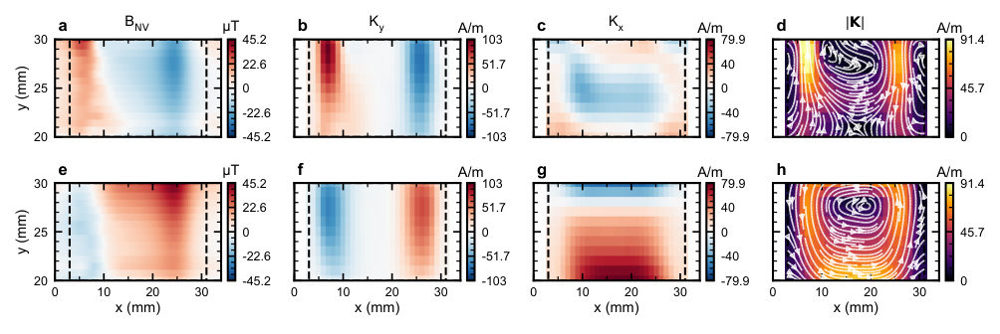
<figcaption class="paper-figure-caption"><b>Fig 4.</b> Figure 4: Magnetic-field maps and reconstructed sheet-current density during battery operation. Panels a–d show the charging measurements and panels e–h show the discharging measurements. The first column shows the measured background-subtracted magnetic field. The second and third columns show the reconstructed sheet-current components Ky and Kx. The fourth column shows the current-density magnitude |K|, with streamlines indicating the large-scale current flow. The reconstruction uses the real-space regularized inversion described in Supplementary Note 8.</figcaption>
</figure>
</div>

<p><strong>Summary.</strong> The authors developed and tested a miniaturized diamond magnetometer capable of measuring magnetic fields non-contactly in confined spaces. By coupling excitation and collection through separate fiber cores, they overcame previous performance bottlenecks. This allowed them to successfully image the internal current flow within a lithium-ion battery, opening new avenues for portable energy diagnostics.</p>
<p><strong>Why it may be interesting.</strong> This work represents a significant engineering achievement in applied quantum sensing, demonstrating how fundamental quantum phenomena ($    ext{NV}^-$ magnetometry) can be packaged into robust, deployable tools for industrial diagnostics (battery testing).</p>
<details>
<summary>Detailed structure</summary>
<p><strong>Main problem.</strong> The core challenge is developing a quantum magnetometer sensitive enough for real-world, non-contact measurements within confined spaces, such as imaging the internal current flow of packaged batteries.</p>
<p><strong>Main result.</strong> The authors successfully demonstrated an endoscopic diamond magnetometer achieving $91 	ext{ pT}/\sqrt{	ext{Hz}}$ sensitivity while mapping depth-integrated current density maps inside a lithium-ion pouch cell during charge and discharge cycles.</p>
<p><strong>Method.</strong> Magnetic field measurements are performed using Optically Detected Magnetic Resonance (ODMR) on Nitrogen-Vacancy centers in diamond, coupled with advanced signal processing like closed-loop frequency tracking and real-space regularization for inverse problem solving.</p>
<p><strong>Model / system.</strong> The system uses a miniaturized, multi-core fiber-coupled diamond sensor head. The physics relies on the spin triplet ground state of $  ext{NV}^-$ centers, whose resonance frequencies shift linearly with the local magnetic field ($\delta
u \propto B$).</p>
<p><strong>Key observables.</strong> Magnetic-field sensitivity ($91 	ext{ pT}/\sqrt{	ext{Hz}}$), depth-integrated sheet current density maps ($\mathbf{K}(x, y)$ in $    ext{A/m}$), and the ODMR resonance frequency shift.</p>
<p><strong>Important parameters / regimes.</strong> Sensor diameter ($\le 6 	ext{ mm}$), measurement bandwidth ($2 	ext{ kHz}$), stand-off distance ($\approx 2 	ext{ mm}$), and regularization parameters ($\lambda$, $\mu_{	ext{div}}$).</p>
<p><strong>Assumptions / limitations.</strong> The reconstructed current density is depth-integrated, meaning the exact spatial distribution of current within the battery thickness cannot be resolved. The measurement assumes a linear relationship between field shift and magnetic field.</p>
<p><strong>Figures summary.</strong> Figures illustrate the endoscopic sensor architecture (multi-core fiber bundle), the setup for imaging batteries, and maps showing reconstructed current density components ($K_x, K_y$) during charging/discharging cycles.</p>
<p><strong>Paper structure.</strong> The paper progresses from establishing the physical limitations of miniaturization to detailing the optical engineering solution (multi-core coupling). It then describes the quantum measurement technique (ODMR with closed-loop tracking) and culminates in applying this system to solve a complex inverse problem: reconstructing internal current sheets from external magnetic field measurements.</p>
</details>
<details>
<summary>Abstract</summary>
<p>Transitioning quantum magnetometry from laboratory environments to real-world applications has been limited by a persistent trade-off between sensor miniaturization and magnetic sensitivity. While bulky systems can achieve high sensitivity, endoscopic probes commonly suffer from inefficient fluorescence collection and reduced performance. Here we resolve this trade-off and present a miniaturized diamond quantum magnetometer with a 6 mm diameter endoscopic sensor head, achieving a magnetic-field sensitivity of 91 pT/sqrt(Hz) with a 2 kHz measurement bandwidth in a magnetically unshielded environment. The fluorescence collection bottleneck is overcome by separating excitation and collection into different cores of a fused multi-core fiber bundle, coupled to the diamond through a custom high-numerical-aperture micro-objective. A compact FPGA-based backend performs microwave control, lock-in detection and real-time resonance tracking, enabling robust operation during magnetic-field imaging. To demonstrate the practical utility of the miniaturized sensor, we image the magnetic field of a commercial lithium-ion pouch cell during charge and discharge and reconstruct depth-integrated current-density maps of the current flow. These results show that endoscopic diamond magnetometers can combine high sensitivity with a probe geometry suitable for confined, unshielded measurements, opening new avenues in battery technology and beyond.</p>
</details>
<p><sub><a href="#top">↑ back to top</a></sub></p>

<p><a id="paper-2606.18631"></a></p>
<h3 id="coherence-measures-in-the-strictly-incoherent-operation-framework-and-its-application-in-the-multi-path-interferometer"><a href="http://arxiv.org/abs/2606.18631v1">Coherence measures in the strictly incoherent operation framework and its application in the multi-path interferometer</a></h3>
<p><strong>Authors:</strong> Peiru Li, Jingyan Liu, Ming-Jing Zhao<br>
<strong>Type:</strong> theory · <strong>Category:</strong> quantum information and computing · <strong>PDF:</strong> <a href="https://arxiv.org/pdf/2606.18631v1">https://arxiv.org/pdf/2606.18631v1</a><br>
<strong>Analysis basis:</strong> full PDF text, analyzed in chunks
<strong>Topic relevance:</strong> <code>interference shaping light</code> <strong>3/5</strong> · <code>correlated / nonlocal dissipation</code> <strong>1/5</strong> · <code>driven-dissipative phase transition</code> <strong>1/5</strong> · <code>entanglement &amp; information structure</code> <strong>1/5</strong> · <code>methods for driven-dissipative</code> <strong>1/5</strong> · <code>non-equilibrium dynamics</code> <strong>1/5</strong></p>
<div class="figure-strip-hint">↔ Scroll figures horizontally</div>
<div class="paper-figures-scroll">
<figure class="paper-figure-card">
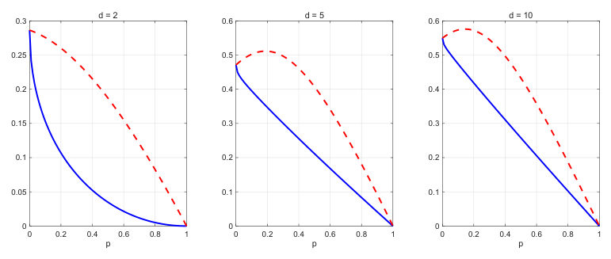
<figcaption class="paper-figure-caption"><b>Fig 1.</b> FIG. 1: (Color Online) The comparison of the exact value CF diag and its upper bound in Theorem</figcaption>
</figure>
<figure class="paper-figure-card">
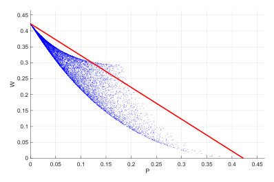
<figcaption class="paper-figure-caption"><b>Fig 2.</b> FIG. 2: The P −W diagrams for the randomly sampled pure states in three-path interferometer.</figcaption>
</figure>
<figure class="paper-figure-card">
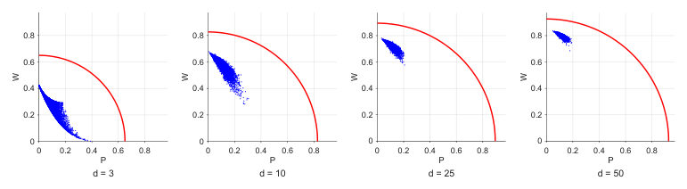
<figcaption class="paper-figure-caption"><b>Fig 3.</b> FIG. 3: The P −W diagrams for randomly sampled pure quantum states in dimensions d =</figcaption>
</figure>
</div>

<p><strong>Summary.</strong> The paper develops a novel, fidelity-based measure of quantum coherence applicable within the framework of strictly incoherent operations. It proves this measure's mathematical validity and monotonicity, and critically applies it to multi-path interferometers. The results yield quantitative bounds on wave-particle duality expressed in terms of fidelity, offering deeper insights into fundamental quantum behavior.</p>
<p><strong>Why it may be interesting.</strong> This work provides a rigorous mathematical tool ($C_{	ext{diag}}$) to quantify quantum coherence loss under realistic physical constraints (SIOs), which is crucial for understanding decoherence processes relevant across quantum optics and information theory.</p>
<details>
<summary>Detailed structure</summary>
<p><strong>Main problem.</strong> The paper addresses the fundamental challenge of quantifying quantum coherence, particularly within the mathematical framework defined by strictly incoherent operations (SIOs). It aims to establish a robust measure that characterizes this loss of quantumness.</p>
<p><strong>Main result.</strong> A fidelity-based coherence measure, $C_F^{	ext{diag}}(
ho)$, is proposed and proven to be monotonic under SIOs. Furthermore, the authors derive quantitative wave-particle duality relations for multi-path interferometers using this measure.</p>
<p><strong>Method.</strong> The methodology involves defining a general coherence measure based on the fidelity between the state $
ho$ and its diagonal projection $\Delta(
ho)$, leading to $C_F^{	ext{diag}}(
ho) = 1 - F(
ho, \Delta(
ho))$. This is then applied analytically and numerically to interferometric models.</p>
<p><strong>Model / system.</strong> The primary model involves general quantum states $
ho$ in a $d$-dimensional Hilbert space. The application context is the multi-path interferometer, which allows for the characterization of wave-particle duality using coherence measures.</p>
<p><strong>Key observables.</strong> Coherence measures ($C_{	ext{diag}}$), Wave Measure ($W(
ho)$), Particle Measure ($P(
ho)$), and Fidelity ($F$).</p>
<p><strong>Important parameters / regimes.</strong> The dimensionality $d$ (number of paths) is a key parameter, as are the rank $k$ of the diagonal state $\Delta(
ho)$.</p>
<p><strong>Assumptions / limitations.</strong> The coherence measure $C_{	ext{diag}}(
ho)$ is inherently basis-dependent because it relies on projecting onto a specific reference basis via $\Delta(\cdot)$.</p>
<p><strong>Figures summary.</strong> Figures compare the calculated values of the coherence measure against theoretical upper bounds (e.g., Theorem 4). Figure 3 specifically shows $P-W$ diagrams for sampled pure states in various dimensions ($d=3, 10, 25, 50$), illustrating that these points lie within a boundary defined by the quadric form $W^2 + P^2 = 1 - 1/\sqrt{d}$.</p>
<p><strong>Paper structure.</strong> The paper first establishes the general theory of coherence measures in SIOs, proposing and proving properties for $C_{	ext{diag}}(
ho)$. It then rigorously proves its monotonicity. Finally, it applies this framework to derive quantitative bounds on wave-particle duality in multi-path interferometers.</p>
</details>
<details>
<summary>Abstract</summary>
<p>Quantifying coherence is an essential endeavor in both quantum foundations and quantum technologies. In this paper, we study the coherence measures in terms of the diagonal states in the strictly incoherent operations framework. Specifically, we propose a coherence measure in terms of fidelity and provide its analytical expression. The relations between the proposed coherence measure and some other coherence measures are derived. Furthermore, we prove its monotonicity under incoherent operations. As an application, we explore the role of the proposed coherence measure in characterizing the waveness in the multi-path interferometer. As a result, some wave-particle dualities in terms of fidelity are presented. This work not only deepens the interpretation of the diagonal states on characterizing quantum states, but also promotes the quantitative description of the wave-particle behaviors in the multi-path interferometer.</p>
</details>
<p><sub><a href="#top">↑ back to top</a></sub></p>

<p><a id="paper-2606.19030"></a></p>
<h3 id="large-deviation-tails-of-critical-order-parameter-distributions"><a href="http://arxiv.org/abs/2606.19030v1">Large-deviation tails of critical order-parameter distributions</a></h3>
<p><strong>Authors:</strong> Jinhong Zhu, Yihao Xu, Abbas Ali Saberi, Youjin Deng<br>
<strong>Type:</strong> theory · <strong>Category:</strong> statistical mechanics · <strong>PDF:</strong> <a href="https://arxiv.org/pdf/2606.19030v1">https://arxiv.org/pdf/2606.19030v1</a><br>
<strong>Analysis basis:</strong> full PDF text, analyzed in chunks
<strong>Topic relevance:</strong> <code>non-equilibrium universality</code> <strong>3/5</strong> · <code>non-equilibrium dynamics</code> <strong>2/5</strong> · <code>Keldysh / 2PI / non-Gaussian methods</code> <strong>1/5</strong> · <code>analog quantum simulation</code> <strong>1/5</strong> · <code>driven-dissipative phase transition</code> <strong>1/5</strong></p>
<div class="figure-strip-hint">↔ Scroll figures horizontally</div>
<div class="paper-figures-scroll">
<figure class="paper-figure-card">
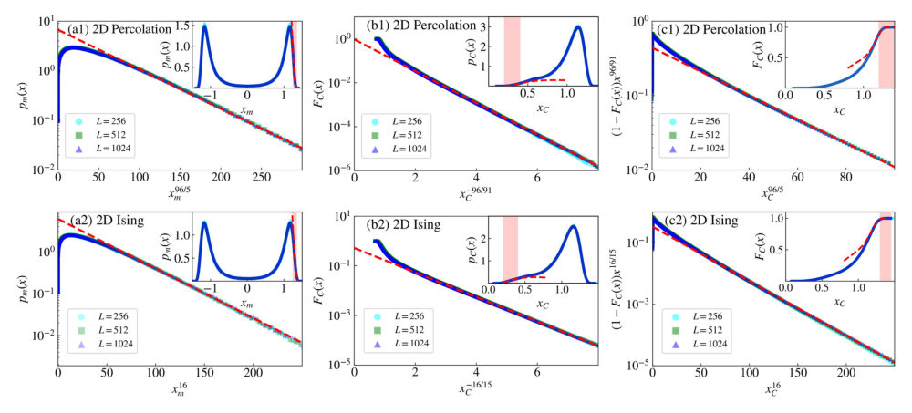
<figcaption class="paper-figure-caption"><b>Fig 1.</b> Figure 1. Probability distributions of the rescaled order parameters in two dimensions. Panels (a1)–(c1) show 2D percolation, and panels (a2)–(c2) show the 2D FK-Ising model. Different colors correspond to different system sizes. Panels (a1) and (a2) show pm(x) versus x 1/(1−y∗ h) m in the large-x regime; the insets show the full PDFs of xm. Panels (b1) and (b2) show the left tail of the CDF FC(x) versus x −1/y∗ h C ; the insets show the full PDFs of xC. Panels (c1) and (c2) show (1 −FC(x))x1/y∗ h versus</figcaption>
</figure>
<figure class="paper-figure-card">
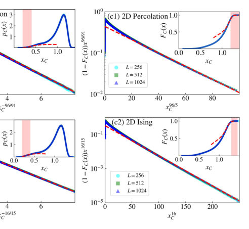
<figcaption class="paper-figure-caption"><b>Fig 2.</b> Figure 2 shows the results for the three-dimensional simple cubic lattice. We use the high-precision estimates yh = 2.4818(4) for the 3D Ising universality class [26] and yh = 2.522 95(15) for 3D percolation [27]. These give y∗ h ≈0.8273 for Ising and y∗ h ≈0.8410 for percolation. For xm, Figs. 2(a1) and 2(a2) plot pm(x) against x1/(1−y∗ h) m . The data show the expected semi-logarithmic</figcaption>
</figure>
<figure class="paper-figure-card">
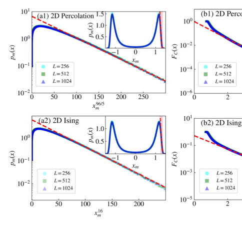
<figcaption class="paper-figure-caption"><b>Fig 3.</b> Figure 1 shows the results for the two-dimensional square lattice. The reduced magnetic exponent is y∗ h = 15/16 for the 2D Ising universality class and y∗ h = 91/96 for 2D percolation. These values imply large right-tail exponents, 1/(1 −y∗ h) = 16 for Ising and 96/5 for per- colation, making the two-dimensional tails particularly</figcaption>
</figure>
<figure class="paper-figure-card">
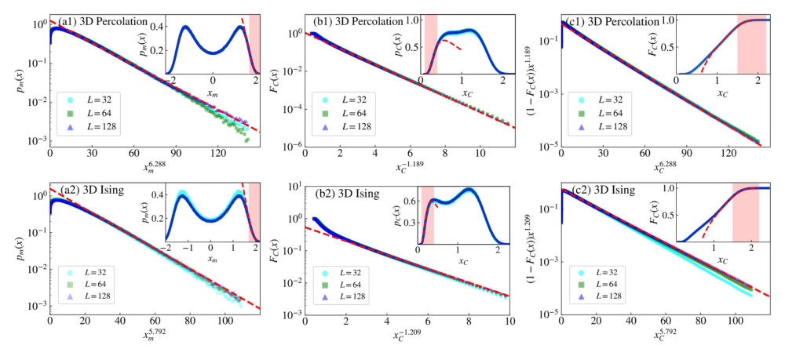
<figcaption class="paper-figure-caption"><b>Fig 4.</b> Figure 2. Probability distributions of the rescaled order parameters in three dimensions. Panels (a1)–(c1) show 3D percolation, and panels (a2)–(c2) show the 3D FK-Ising model. Different colors correspond to different system sizes. Panels (a1) and (a2) show pm(x) versus x 1/(1−y∗ h) m in the large-x regime; the insets show the full PDFs of xm. Panels (b1) and (b2) show the left tail of the CDF FC(x) versus x −1/y∗ h C ; the insets show the full PDFs of xC. Panels (c1) and (c2) show (1 −FC(x))x1/y∗ h versus</figcaption>
</figure>
<figure class="paper-figure-card">
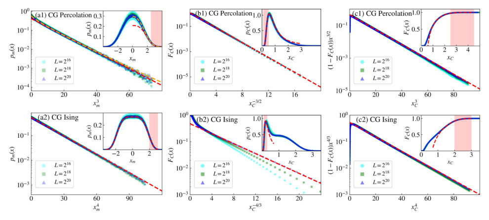
<figcaption class="paper-figure-caption"><b>Fig 5.</b> Figure 3. Probability distributions of the rescaled order parameters on the complete graph. Panels (a1)–(c1) show critical percolation, and panels (a2)–(c2) show the FK-Ising model. Different colors correspond to different system sizes. Panels (a1) and (a2) show pm(x) versus x 1/(1−y∗ h) m in the large-x regime; the insets show the full PDFs of xm. Panels (b1) and (b2) show the left tail of the CDF FC(x) versus x −1/y∗ h C ; the insets show the full PDFs of xC. Panels (c1) and (c2) show (1 −FC(x))x1/y∗ h</figcaption>
</figure>
</div>

<p><strong>Summary.</strong> This paper investigates how large deviations in order parameters reveal fundamental aspects of criticality that standard averages miss. By studying percolation and Ising models on various lattices, the authors derive universal scaling laws for these tails. The results demonstrate a deep connection between geometric constraints (like those found on complete graphs) and the underlying critical physics.</p>
<p><strong>Why it may be interesting.</strong> While focused on classical statistical mechanics, the rigorous mathematical techniques for analyzing rare events and universality in critical systems are foundational concepts applicable across many-body physics, including quantum phase transitions.</p>
<details>
<summary>Detailed structure</summary>
<p><strong>Main problem.</strong> The study focuses on probing universality beyond standard finite-size scaling by analyzing the large-deviation tails of critical order-parameter distributions.</p>
<p><strong>Main result.</strong> The analysis establishes universal scaling forms for these tails, revealing that rare configurations in complex systems (like the complete graph FK-Ising model) can be governed by different underlying physics (e.g., percolation vs. Ising).</p>
<p><strong>Method.</strong> The authors employ large-deviation theory and finite-size scaling arguments to derive and test universal scaling forms for the cumulative distribution functions of rescaled order parameters.</p>
<p><strong>Model / system.</strong> The work examines critical phenomena in both bond percolation and the Fortuin–Kasteleyn (FK) Ising model across various geometries: 2D lattices, 3D lattices, and complete graphs.</p>
<p><strong>Key observables.</strong> Rescaled magnetization-like variable ($x_m = |M|/\langle|M|
angle$) and the rescaled largest-cluster variable ($x_C = C_1/\langle C_1
angle$).</p>
<p><strong>Important parameters / regimes.</strong> Critical exponents, dimensionality (2D, 3D), and the mean-field limit (complete graph).</p>
<p><strong>Assumptions / limitations.</strong> The analysis assumes that the leading exponential cost in the large deviation tail is governed by specific critical exponents derived from scaling theory.</p>
<p><strong>Figures summary.</strong> Figures illustrate the collapse of scaled probability distributions for both order parameters across different dimensions, highlighting deviations and crossovers (e.g., percolation-like vs. Ising-like scaling on the complete graph).</p>
<p><strong>Paper structure.</strong> The paper develops theoretical frameworks using finite-size scaling to predict tail behavior, applies these forms to specific models (percolation/Ising) on different lattices, and uses Monte Carlo simulations to test the predicted universal scaling laws.</p>
</details>
<details>
<summary>Abstract</summary>
<p>Large-deviation tails of critical probability distributions provide a sensitive probe of universality beyond standard finite-size scaling. We study these tails for critical percolation and Fortuin--Kasteleyn Ising models on two-dimensional lattices, three-dimensional lattices, and complete graphs. We consider two rescaled order parameters: the magnetization-like variable $x_m=|M|/\langle |M|\rangle$, including a signed cluster-mass analogue for percolation, and the largest-cluster variable $x_C=C_1/\langle C_1\rangle$. For $x_m$, we test the expected stretched-exponential large-deviation tail and show that the same form applies to the percolation analogue. For $x_C$, guided by the exact complete-graph result and scaling arguments, we propose universal scaling forms for both tails of the cumulative distribution and test them by extensive Monte Carlo simulations. In the complete-graph FK-Ising model, the left tail is governed by rare configurations with percolation-like scaling rather than by the typical Ising scaling. Our results show that the tails of order-parameter distributions reveal universal features of critical fluctuations that are not captured by averaged observables alone.</p>
</details>
<p><sub><a href="#top">↑ back to top</a></sub></p>

<p><a id="paper-2606.18358"></a></p>
<h3 id="all-reflective-field-widened-unbalanced-interferometer-for-quantum-sensing-and-communication-applications"><a href="http://arxiv.org/abs/2606.18358v1">All Reflective Field-widened Unbalanced Interferometer for Quantum Sensing and Communication Applications</a></h3>
<p><strong>Authors:</strong> Ramy Tannous, Dogan Sinar, Tabitha D. Arulpragasam, Thomas Jennewein<br>
<strong>Type:</strong> both · <strong>Category:</strong> quantum information and computing · <strong>PDF:</strong> <a href="https://arxiv.org/pdf/2606.18358v1">https://arxiv.org/pdf/2606.18358v1</a><br>
<strong>Analysis basis:</strong> full PDF text, analyzed in chunks
<strong>Topic relevance:</strong> <code>interference shaping light</code> <strong>3/5</strong> · <code>quantum optics experiment</code> <strong>2/5</strong> · <code>QC/QI experiment</code> <strong>1/5</strong> · <code>free-space correlated emission</code> <strong>1/5</strong></p>
<div class="figure-strip-hint">↔ Scroll figures horizontally</div>
<div class="paper-figures-scroll">
<figure class="paper-figure-card">
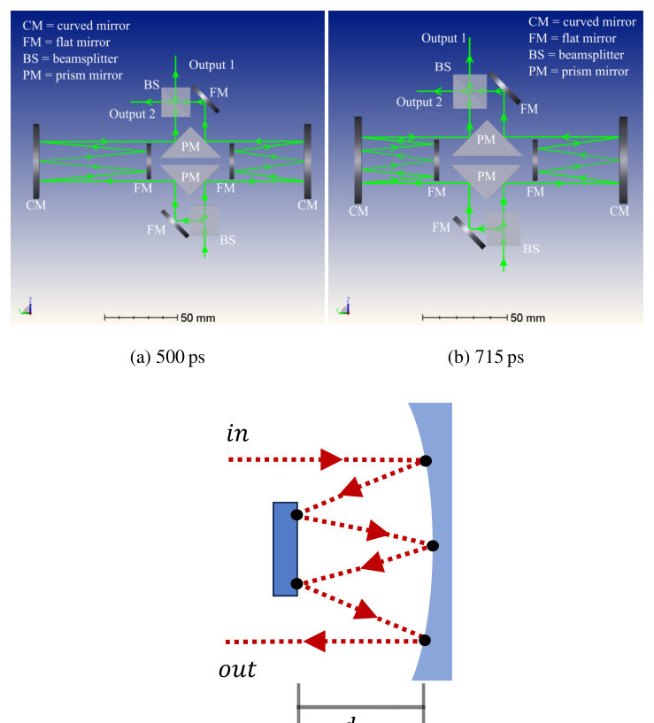
<figcaption class="paper-figure-caption"><b>Fig 1.</b> FIG. 1: Schematic of the optical design of the Offner relay interferometer. (a) Model of an ORI</figcaption>
</figure>
<figure class="paper-figure-card">
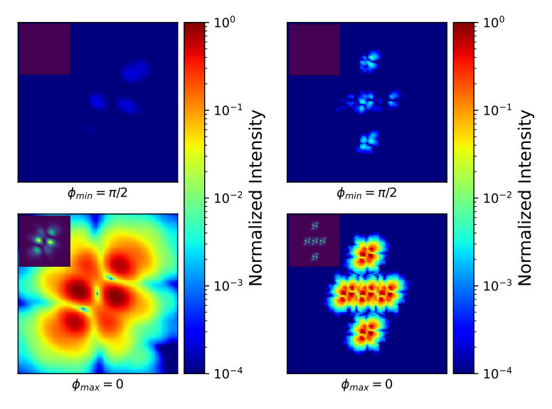
<figcaption class="paper-figure-caption"><b>Fig 2.</b> FIG. 2: Simulated coherent interference maxima (bottom) and minima (top) using non-sequential</figcaption>
</figure>
<figure class="paper-figure-card">

<figcaption class="paper-figure-caption"><b>Fig 3.</b> Fig. 3 shows the relative phase of the output of a refractive field-widened interferometer that uses</figcaption>
</figure>
<figure class="paper-figure-card">
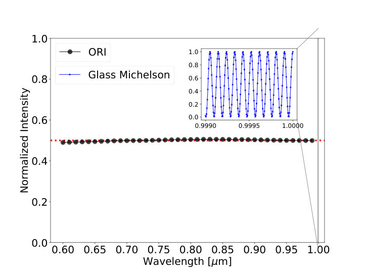
<figcaption class="paper-figure-caption"><b>Fig 4.</b> FIG. 3: The main figure shows the intensity of one of the outputs of the ORI as a function of</figcaption>
</figure>
<figure class="paper-figure-card">
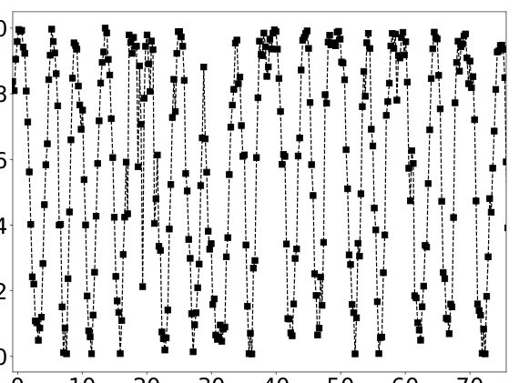
<figcaption class="paper-figure-caption"><b>Fig 5.</b> FIG. 4: Normalized multimode signal intensity measured at the output of the ORI with a camera.</figcaption>
</figure>
</div>

<p><strong>Summary.</strong> This paper introduces an all-reflective interferometer designed to overcome wavefront distortion issues inherent in free-space quantum communication. By using only mirrors, the device maintains high interference visibility and remains achromatic across broadband light sources. This makes it a robust alternative to traditional interferometers for applications like satellite quantum links.</p>
<p><strong>Why it may be interesting.</strong> This work directly addresses hardware limitations in quantum networking by proposing a robust, passive optical element suitable for field-free propagation channels, which is crucial for scaling up quantum information infrastructure.</p>
<details>
<summary>Detailed structure</summary>
<p><strong>Main problem.</strong> The primary challenge addressed is developing passive interferometers for free-space quantum communication that can operate reliably over turbulent atmospheric channels without complex adaptive optics.</p>
<p><strong>Main result.</strong> The proposed all-reflective interferometer achieves high interference visibility (&gt;0.97) for spatially multimode beams and is inherently achromatic across broadband wavelengths, outperforming refractive alternatives.</p>
<p><strong>Method.</strong> The authors employed numerical optical ray tracing simulations to model the performance of their novel reflective interferometer design (Offner Relay Interferometer).</p>
<p><strong>Model / system.</strong> The core system is an All Reflective Field-widened Unbalanced Interferometer utilizing only standard spherical mirrors in a cavity configuration. This setup is designed for time-bin encoded qubits used in quantum communication.</p>
<p><strong>Key observables.</strong> Interference visibility (V), physical footprint, and chromatic dependence of the interference signal across broadband wavelengths (600 nm to 1000 nm).</p>
<p><strong>Important parameters / regimes.</strong> High visibility (&gt;0.97); achromatic performance; ability to handle spatially multimode beams.</p>
<p><strong>Assumptions / limitations.</strong> The design is assumed to be limited by beam clipping in the horizontal direction and that refractive interferometers suffer from significant chromatic dispersion.</p>
<p><strong>Figures summary.</strong> Figures illustrate the ORI schematic, simulated interference maxima/minima showing high visibility even with angular offsets, and comparisons demonstrating the ORI's wavelength independence versus dispersive glass setups. Other figures show imaging capabilities.</p>
<p><strong>Paper structure.</strong> The paper introduces the need for turbulence-resistant quantum links, presents the reflective Offner Relay Interferometer (ORI) design, validates its performance via simulations against refractive and standard Michelson designs, and demonstrates its applicability in sensing and communication contexts.</p>
</details>
<details>
<summary>Abstract</summary>
<p>Interference of time-bin encoded signals over free-space optical channels typically requires stringent mode filtering on receivers due to wavefront distortions from atmospheric turbulence, conventionally addressed with adaptive optics. Passive multimode receivers based on field-widened interferometers present a compelling alternative, enabling direct interference without the overhead of wavefront correction. We demonstrate a field-widened interferometer design that is implemented solely with reflective surfaces and achieves a high interference visibility (greater than 0.97) for spatially multimode beams. The interference of the multimode beams is enabled by two imaging systems that consist of a cavity configuration between a spherical concave mirror and a flat mirror. The configuration enables small form-factors, is inherently achromatic, and is based on standard spherical mirrors which reduces the complexity of the system. The interferometer is applicable for spatially multimode and turbulent optical channels, such as satellite communication, and is designed for quantum systems that use time-bin encoded qubits.</p>
</details>
<p><sub><a href="#top">↑ back to top</a></sub></p>

<p><a id="paper-2606.18731"></a></p>
<h3 id="math513math-wave-altermagnetism-revealed-by-resonant-inelastic-x-ray-scattering"><a href="http://arxiv.org/abs/2606.18731v1">$d$-wave altermagnetism revealed by resonant inelastic X-ray scattering</a></h3>
<p><strong>Authors:</strong> Guangkai Zhang, Yuehong Li, Xubin Ye, Vincent C. Morano, Sze Tung Li, Jaewon Choi, Rebecca Scatena, Shuai Tang, Maocai Pi, Mengqi Ye, Mirian Garcia-Fernandez, Alessandro Bombardi, Xiaomei Qin, Zhao Pan, Daniel G. Mazzone, Qisi Wang, Yi Lu, Yao Shen, Youwen Long<br>
<strong>Type:</strong> both · <strong>Category:</strong> strongly correlated electrons · <strong>PDF:</strong> <a href="https://arxiv.org/pdf/2606.18731v1">https://arxiv.org/pdf/2606.18731v1</a><br>
<strong>Analysis basis:</strong> full PDF text, analyzed in chunks
<strong>Topic relevance:</strong> <code>exotic spin models in light-matter</code> <strong>3/5</strong> · <code>spintronics-quantum-optics interface</code> <strong>3/5</strong></p>
<div class="figure-strip-hint">↔ Scroll figures horizontally</div>
<div class="paper-figures-scroll">
<figure class="paper-figure-card">
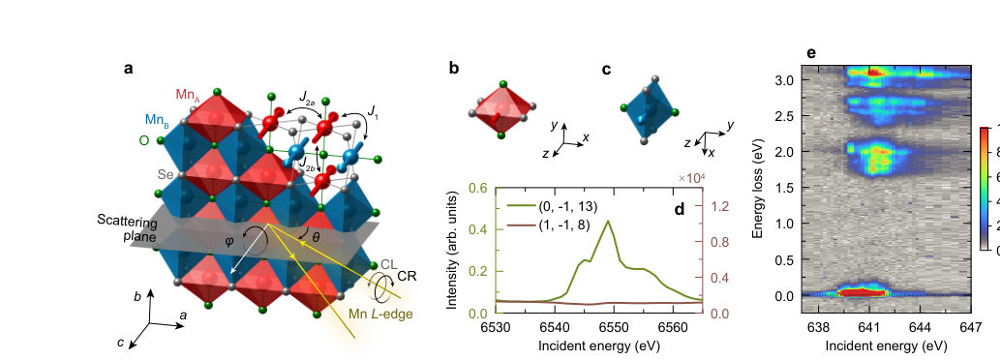
<figcaption class="paper-figure-caption"><b>Fig 1.</b> FIG. 1. Crystal symmetry of La2O3Mn2Se2 and resonant X-ray scattering characterization. a, Schematic of</figcaption>
</figure>
<figure class="paper-figure-card">
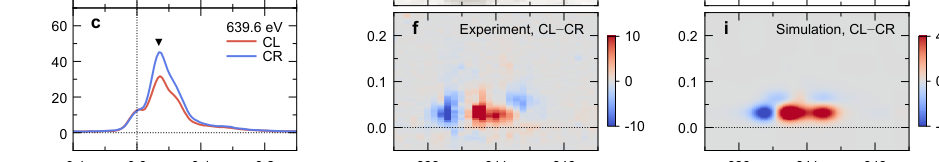
<figcaption class="paper-figure-caption"><b>Fig 2.</b> FIG. 2. Circular dichroism in single-magnon excitations. a, Representative RIXS spectrum in the CL channel. Open</figcaption>
</figure>
<figure class="paper-figure-card">
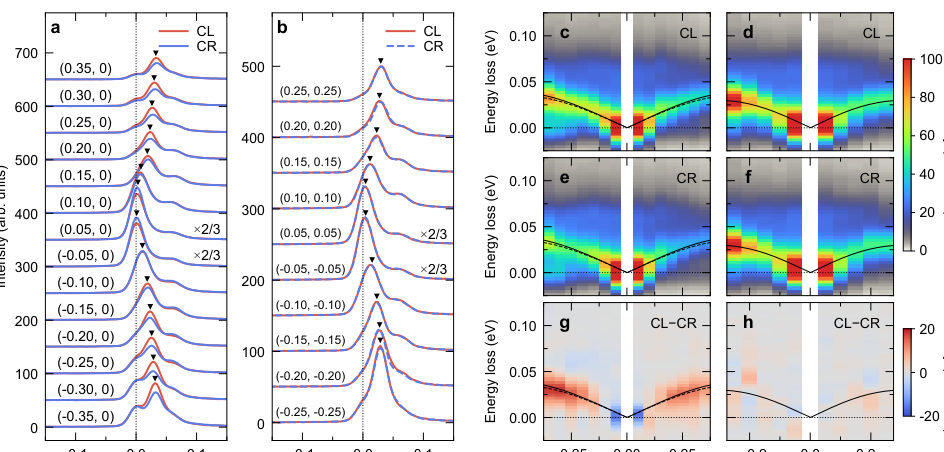
<figcaption class="paper-figure-caption"><b>Fig 3.</b> FIG. 3. Magnon dispersion and momentum dependence of circular dichroism. a, b, RIXS spectra measured at</figcaption>
</figure>
<figure class="paper-figure-card">
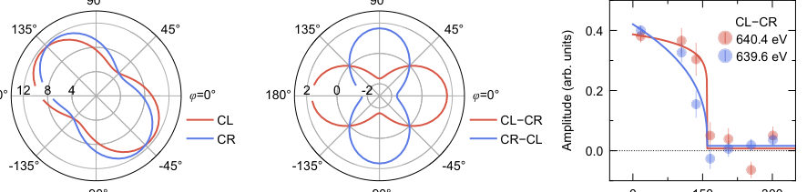
<figcaption class="paper-figure-caption"><b>Fig 4.</b> FIG. 4. Azimuthal dependence of circular dichroism. a, b, Azimuthal angle (ϕ) dependence of the fitted single-magnon</figcaption>
</figure>
</div>

<p><strong>Summary.</strong> This paper reports definitive experimental evidence for $d$-wave altermagnetism in the material $  ext{La}_2   ext{O}_3    ext{Mn}_2   ext{Se}_2$ using resonant inelastic X-ray scattering (RIXS). By analyzing circular dichroism, the authors resolve a long-standing debate by proving that this signal is an intrinsic consequence of altermagnetic symmetry rather than an experimental artifact. This establishes polarized RIXS as a powerful diagnostic tool for characterizing exotic magnetic phases.</p>
<p><strong>Why it may be interesting.</strong> The work provides a highly sensitive spectroscopic tool (polarized RIXS) to probe subtle magnetic symmetries in correlated materials, offering insights into how lattice structure dictates emergent quantum magnetic order beyond simple collinear models.</p>
<details>
<summary>Detailed structure</summary>
<p><strong>Main problem.</strong> The study aims to definitively resolve whether circular dichroism observed in Resonant Inelastic X-ray Scattering (RIXS) is an intrinsic signature of altermagnetism or merely an artifact of experimental geometry.</p>
<p><strong>Main result.</strong> The authors provide unambiguous evidence for $d$-wave altermagnetism in $  ext{La}_2   ext{O}_3    ext{Mn}_2   ext{Se}_2$, proving that the observed RIXS dichroism is a direct consequence of fundamental altermagnetic symmetry constraints.</p>
<p><strong>Method.</strong> The research combines advanced experimental measurements using circularly polarized RIXS at the Mn $L_3$ edge with theoretical modeling via Exact Diagonalization (ED) calculations based on lattice symmetries.</p>
<p><strong>Model / system.</strong> The system is the strongly correlated Lieb-lattice magnet $ ext{La}_2   ext{O}_3    ext{Mn}_2   ext{Se}_2$, which exhibits altermagnetism—a magnetic order with compensated moments lacking relativistic spin-orbit coupling. The theoretical framework models two non-interacting Mn sublattices connected by specific symmetry operations.</p>
<p><strong>Key observables.</strong> Circular dichroism ($\Delta I = I_{CL} - I_{CR}$) in the single-magnon excitation peak, which exhibits a distinct $d$-wave symmetry and vanishes above the Néel temperature.</p>
<p><strong>Important parameters / regimes.</strong> The measurements are performed at low temperatures (e.g., 15 K) and involve varying incident photon energy, momentum transfer ($\mathbf{q}$), and azimuthal angle ($\phi$).</p>
<p><strong>Assumptions / limitations.</strong> The analysis assumes that the observed dichroism is governed by symmetry constraints derived from the altermagnetic order, independent of magnon branch splitting or quasi-elastic susceptibility.</p>
<p><strong>Figures summary.</strong> Figures illustrate the crystal structure and RIXS geometry; key figures map the momentum dependence and azimuthal ($\phi$) variation of the circular dichroism signal, showing clear $d$-wave anisotropy at low temperatures.</p>
<p><strong>Paper structure.</strong> The paper establishes the physical context of altermagnetism, details the experimental setup using polarized RIXS on $ ext{La}_2   ext{O}_3    ext{Mn}_2   ext{Se}_2$, presents the measurement results showing $d$-wave dichroism, and concludes by theoretically proving that this signal arises directly from symmetry breaking inherent to the altermagnetic state.</p>
</details>
<details>
<summary>Abstract</summary>
<p>Altermagnetism defines a third fundamental class of collinear magnetic order, featuring compensated magnetic moments with antiparallel spin alignment, yet lifted Kramers degeneracy without the need for relativistic spin-orbit coupling. Its ability to host spin-polarized electronic bands and unconventional chiral magnons makes it a promising platform for functional materials. However, experimental verification has proven challenging; while circular dichroism in resonant inelastic X-ray scattering (RIXS) has been suggested as a signature of chiral magnons, it remains controversial whether this effect is an intrinsic property of altermagnetism or an artifact of experimental geometry. In this work, we resolve this debate and provide unambiguous experimental evidence of $d$-wave altermagnetism in the strongly correlated Lieb-lattice magnet La$_2$O$_3$Mn$_2$Se$_2$. The RIXS spectra exhibit a $d$-wave-symmetry circular dichroism in the magnetic excitations that vanishes in the paramagnetic phase. Through RIXS-operator symmetry analysis and exact-diagonalization calculations, we prove that the observed dichroism is a direct consequence of altermagnetic symmetry constraints, independent of magnon branch splitting. Our results provide definitive evidence for the experimental realization of $d$-wave altermagnetism in La$_2$O$_3$Mn$_2$Se$_2$ and establish circularly polarized RIXS as a highly symmetry-sensitive spectroscopic framework for detecting magnetic phases that evade conventional probes.</p>
</details>
<p><sub><a href="#top">↑ back to top</a></sub></p>

<p><a id="paper-2606.18396"></a></p>
<h3 id="an-effective-field-theory-approach-to-the-sign-problem-in-bfss"><a href="http://arxiv.org/abs/2606.18396v1">An effective field theory approach to the sign problem in BFSS</a></h3>
<p><strong>Authors:</strong> Gauri Batra, Henry W. Lin, Haifeng Tang<br>
<strong>Type:</strong> theory · <strong>Category:</strong> statistical mechanics · <strong>PDF:</strong> <a href="https://arxiv.org/pdf/2606.18396v1">https://arxiv.org/pdf/2606.18396v1</a><br>
<strong>Analysis basis:</strong> full PDF text, analyzed in chunks
<strong>Topic relevance:</strong> <code>Keldysh / 2PI / non-Gaussian methods</code> <strong>3/5</strong> · <code>driven-dissipative phase transition</code> <strong>1/5</strong> · <code>methods for driven-dissipative</code> <strong>1/5</strong></p>
<div class="figure-strip-hint">↔ Scroll figures horizontally</div>
<div class="paper-figures-scroll">
<figure class="paper-figure-card">
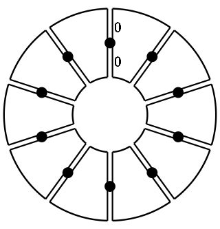
<figcaption class="paper-figure-caption"><b>Fig 1.</b> Figure 1: The planar Wick contraction of ⟨Wid Wρ⟩0. The rungs that connect the inner and outer ring are the dressed propagators in the large D approximation for the bosonic zero modes.</figcaption>
</figure>
<figure class="paper-figure-card">
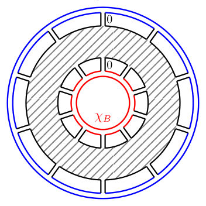
<figcaption class="paper-figure-caption"><b>Fig 2.</b> Figure 2: The leading planar diagrams that contribute to ⟨cos θ⟩in the replica expansion. The bosonic rungs enter the annulus from the outer fermion ring and are absorbed into the non-perturbative zero-mode correlator. This presentation makes manifest that only the external bosonic legs that contract the two single-trace operators T10 are kept explicit; the resummation of all bosonic interactions inside the connected two-point function lives entirely inside the hashed annulus. We may think of Figure 1 as a possible contribution to the annulus.</figcaption>
</figure>
<figure class="paper-figure-card">
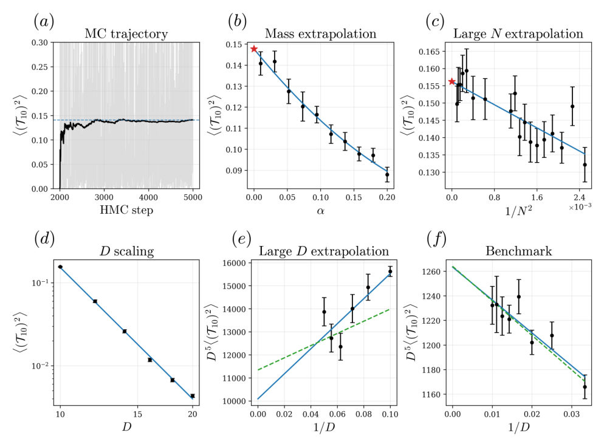
<figcaption class="paper-figure-caption"><b>Fig 3.</b> Figure 3: (a) Monte Carlo history at D = 10, N = 30, α = 0.01, showing ⟨(T10)2⟩versus HMC step (after 2000 thermalization steps). The light gray curve is the instantaneous value with large fluctuation, the black curve is the stabilized running average, and the blue dashed line is the average value at the end of the HMC run. (b) Mass extrapolation at fixed D = 10 and N = 30, showing ⟨(T10)2⟩versus mass α. Black points with error bars are HMC data, the blue curve is a polynomial fit, and the red star is the extrapolated value at α = 0. (c) Large-N extrapolation at fixed D = 10 using data already extrapolated to α = 0, showing ⟨(T10)2⟩versus N −2. Black points with error bars are the...</figcaption>
</figure>
<figure class="paper-figure-card">
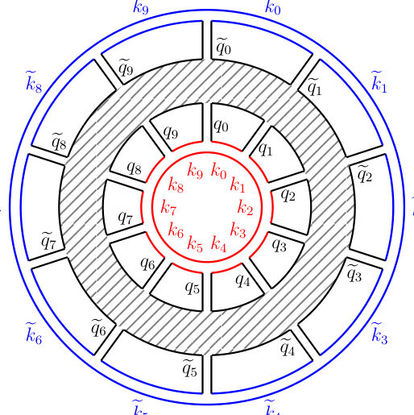
<figcaption class="paper-figure-caption"><b>Fig 4.</b> Figure 4: The higher-dimensional ring. We have labeled the d −1 spatial momentum carried by each propagator. The bosonic modes that enter the hashed annulus carry momentum q or eq but are zero-modes on the thermal circle.</figcaption>
</figure>
<figure class="paper-figure-card">

<figcaption class="paper-figure-caption"><b>Fig 5.</b> Figure 5: Same diagram as figure 2, except that two adjacent bosonic rungs carry non-zero Matsubara frequencies n and −n. We have replaced two Xi matrices with fast modes; the gauge field A0 is constant in static gauge.</figcaption>
</figure>
</div>

<p><strong>Summary.</strong> This paper develops an effective field theory framework to analyze the notorious fermion sign problem in BFSS matrix quantum mechanics. By using high-temperature expansions and symmetry arguments, the authors determine that while the sign problem is present, its perturbative onset is delayed, suggesting manageable errors at moderate temperatures. The work establishes scaling laws for the suppression of the phase factor in the large-$N$ limit.</p>
<p><strong>Why it may be interesting.</strong> While focused on high-energy physics, the methodology of analyzing complex phases and divergences in path integrals is highly relevant to understanding sign problems in lattice simulations of quantum field theories, which share mathematical structures with many statistical mechanics models.</p>
<details>
<summary>Detailed structure</summary>
<p><strong>Main problem.</strong> The primary challenge addressed is the fermion sign problem, which prevents direct classical simulation of quantum theories involving fermions using Monte Carlo methods.</p>
<p><strong>Main result.</strong> The authors show that while the sign problem exists in the continuum limit for BFSS theory, its leading perturbative onset is at a high loop order, and for moderate temperatures, the resulting error in thermodynamic quantities is small.</p>
<p><strong>Method.</strong> They employ an effective field theory approach combined with the high-temperature expansion to reduce the path integral to a bosonic zero-mode integral. The sign problem is diagnosed by analyzing the expectation value of the Pfaffian phase $\langle e^{i	heta} 
angle$.</p>
<p><strong>Model / system.</strong> The analysis focuses on the D0-brane/BFSS matrix quantum mechanics, which is generalized to higher-dimensional maximally supersymmetric Yang-Mills (SYM) theories at finite temperature.</p>
<p><strong>Key observables.</strong> The expectation value $\langle \cos 	heta 
angle$ of the Pfaffian phase operator ($    ext{Pf}(M)$), and thermodynamic quantities like Free Energy $F(T)$.</p>
<p><strong>Important parameters / regimes.</strong> High temperatures ($T$), large-$N$ limit ('t Hooft limit), coupling constant $\lambda$, and inverse temperature $eta$.</p>
<p><strong>Assumptions / limitations.</strong> The analysis relies heavily on the high-temperature expansion, integrating out massive Matsubara modes. The perturbative approach is assumed to be valid up to certain orders.</p>
<p><strong>Figures summary.</strong> Figures illustrate planar Wick contractions for correlators contributing to $\langle \cos 	heta 
angle$ in the replica expansion and show Monte Carlo results benchmarking analytic calculations of $\langle(T_{10})^2
angle$.</p>
<p><strong>Paper structure.</strong> The paper systematically analyzes the sign problem using effective field theory, deriving scaling laws in the large-$N$ limit via multiple techniques (replica method, large-D expansion), and calculating subleading temperature corrections through symmetry analysis.</p>
</details>
<details>
<summary>Abstract</summary>
<p>The sign problem is a notorious obstacle for classically simulating quantum theories with fermions. We propose an effective field theory method for analyzing the sign problem. At high temperatures, a $d$+1 dimensional field theory reduces to a bosonic $d$-dimensional theory; the phase of the Pfaffian in the higher dimensional theory is encoded in an operator in the lower dimensional theory. We apply this framework to the D0-brane/BFSS matrix quantum mechanics, where the phase becomes an operator in a bosonic multi-matrix integral. Our results show that the continuum theory has a sign problem that persists in the large-$N$ 't Hooft regime. However, detecting the sign problem involves going to 10-loop order in the high-temperature expansion. This delayed onset follows from the fact that the Pfaffian phase transforms as an $O(9)$ pseudoscalar. Furthermore, the relevant diagrams give a numerically small prefactor. Consequently, ignoring the sign problem leads to a relatively small fractional error in thermodynamic quantities for temperatures $T \gtrsim λ^{1/3}$. However, at stronger coupling in the 't Hooft regime, the sign problem may become more severe. Finally, we initiate the application of this framework to higher-dimensional maximally supersymmetric Yang-Mills theories.</p>
</details>
<p><sub><a href="#top">↑ back to top</a></sub></p>

<p><a id="paper-2606.18743"></a></p>
<h3 id="enhancing-the-teleportation-fidelity-of-a-quantum-network-using-purification"><a href="http://arxiv.org/abs/2606.18743v1">Enhancing the teleportation fidelity of a quantum network using purification</a></h3>
<p><strong>Authors:</strong> Soumit Roy, Md Sohel Mondal, Siddhartha Santra, Indranil Chakrabarty<br>
<strong>Type:</strong> theory · <strong>Category:</strong> quantum information and computing · <strong>PDF:</strong> <a href="https://arxiv.org/pdf/2606.18743v1">https://arxiv.org/pdf/2606.18743v1</a><br>
<strong>Analysis basis:</strong> full PDF text, analyzed in chunks
<strong>Topic relevance:</strong> <code>entanglement &amp; information structure</code> <strong>3/5</strong> · <code>interference shaping light</code> <strong>1/5</strong> · <code>non-equilibrium dynamics</code> <strong>1/5</strong></p>
<div class="figure-strip-hint">↔ Scroll figures horizontally</div>
<div class="paper-figures-scroll">
<figure class="paper-figure-card">

<figcaption class="paper-figure-caption"><b>Fig 1.</b> FIG. 1. Step-by-step Entangled Swapping scenario: The source (S) and the target (T) are not initially connected directly. How- ever, there are intermediate repeater stations in between them. After kth swapping, there is a connection between S and T via an isotropic state with parameter pk+1.</figcaption>
</figure>
<figure class="paper-figure-card">

<figcaption class="paper-figure-caption"><b>Fig 2.</b> FIG. 2. Algorithm for evaluating F tel avg using the SPF and SPL purification strategies (k = 1 and k = kmax) for a complete graph with N = 4. The procedure is illustrated for a single source–target pair, (S, T) = (1, 3). The remaining pairs can be treated analogously, and the F tel avg is obtained by averaging over all pairs.</figcaption>
</figure>
<figure class="paper-figure-card">

<figcaption class="paper-figure-caption"><b>Fig 3.</b> FIG. 3. Purification procedure for an N-node ring network (RN) for both k = 1 and k = kmax. A fixed source node (marked in red) is considered, and the two distinct paths (marked in different colors) are determined based on the positions of the target nodes (marked in green). Based on the symmetry, the remaining configurations can be obtained analogously after the final step.</figcaption>
</figure>
<figure class="paper-figure-card">

<figcaption class="paper-figure-caption"><b>Fig 4.</b> FIG. 4. Plots of (a) F tel avg as a function of p and (b) relative gain as a function of p for a ring network with N = 100 and k = 1 = kmax. The total number of paths is taken to be z = zmax = 2. The horizontal black line suggests F tel avg = 2 3. The grey line denotes the variation of F tel avg with respect to p for the without MPEP scenario.</figcaption>
</figure>
<figure class="paper-figure-card">

<figcaption class="paper-figure-caption"><b>Fig 5.</b> FIG. 5. Purification procedure for an N-node complete graph network (CGN) for k = 1. A fixed source (marked in red) and target (marked in green) are considered, and the paths are de- termined based on the total number of intermediate nodes. As the total number of nodes increases, the number of intermediate nodes—and hence the number of available paths—also increases; the additional paths at each step are indicated by different col- ors. Due to symmetry, the remaining (S, T) pairs can be treated analogously after the final step.</figcaption>
</figure>
</div>

<p><strong>Summary.</strong> This paper rigorously analyzes how entanglement distribution schemes affect the overall 'resourcefulness' of quantum networks. It demonstrates that utilizing multi-path entanglement purification (MPEP) significantly boosts average teleportation fidelity compared to simpler methods. The findings provide critical guidelines for designing robust quantum communication channels across various network topologies.</p>
<p><strong>Why it may be interesting.</strong> This work provides a detailed resource assessment framework for quantum networks, directly impacting the design principles for long-distance quantum communication infrastructure by quantifying the benefit of advanced protocols like MPEP over simple repeater chains.</p>
<details>
<summary>Detailed structure</summary>
<p><strong>Main problem.</strong> The core problem is quantifying the 'resourcefulness' of quantum networks by comparing entanglement distribution schemes, specifically single-path swapping versus multi-path entanglement purification.</p>
<p><strong>Main result.</strong> Multi-path entanglement purification (MPEP) significantly enhances the average teleportation fidelity ($   ext{F}_{    ext{tel}}^{ ext{avg}}$) compared to using only the best available path, and the order of purification matters due to non-associativity.</p>
<p><strong>Method.</strong> The authors analyze network resourcefulness by calculating $    ext{F}_{    ext{tel}}^{ ext{avg}}$, which is averaged over all source-target pairs. They compare protocols based on entanglement swapping versus sequential entanglement purification using multiple paths.</p>
<p><strong>Model / system.</strong> The study models quantum networks (QN) with various topologies, including regular lattices (Ring, Square, Triangular) and random graphs (Erdős-Rényi). Communication relies on shared entangled states distributed over physical links.</p>
<p><strong>Key observables.</strong> Average teleportation fidelity ($  ext{F}_{    ext{tel}}^{ ext{avg}}$), which quantifies the network's overall quantum communication capability.</p>
<p><strong>Important parameters / regimes.</strong> Visibility parameter ($p$), number of nodes ($N$), edge usage constraints ($k=1$ vs $k=	ext{kmax}$), and the order/strategy of purification (SPF vs SPL).</p>
<p><strong>Assumptions / limitations.</strong> The analysis often assumes homogeneous networks with isotropic edges, although generalizations to irregular graphs are performed. The superiority of the Shortest Path Last (SPL) strategy over Shortest Path First (SPF) is a key theoretical result.</p>
<p><strong>Figures summary.</strong> Figures illustrate purification procedures for various lattices (RN, CGN, TLN), showing how $  ext{F}_{    ext{tel}}^{ ext{avg}}$ changes as a function of entanglement visibility ($p$) and the number of paths/purification steps used. Saturation behavior is also shown.</p>
<p><strong>Paper structure.</strong> The paper systematically analyzes network resourcefulness by first defining the metric ($  ext{F}_{    ext{tel}}^{ ext{avg}}$), then comparing single-path vs. multi-path strategies, deriving theoretical results for optimal purification ordering (SPL &gt; SPF), and finally applying these findings to various lattice topologies under different edge usage constraints.</p>
</details>
<details>
<summary>Abstract</summary>
<p>Complex quantum networks can support a diverse set of long-range entanglement distribution schemes ranging from linear repeater protocols to multipath entanglement purification strategies. As a result, a network's resourcefulness, that is its ability to facilitate quantum communication, depends on the deployed distribution scheme. In this work, we analyse and compare the resourcefulness of quantum networks across a broad range of network topologies, including both regular and random networks, under two distinct entanglement distribution schemes. The first relies on entanglement swapping along a single path connecting a source-target pair, while the second exploits entanglement purification using multiple paths between the same source and target nodes. The resourcefulness of the network is quantified using a recently described metric [1] that averages over the maximum teleportation fidelity between arbitrary source-target pairs in the network. We present algorithms for estimating this metric under constraints of edge-usage and ordering of paths. Our results not only demonstrate the sensitivity of the average maximum teleportation fidelity metric to the choice of entanglement distribution protocol, but also highlight the significant improvements enabled by network purification schemes. In particular, purification-based approaches can substantially enhance average teleportation fidelity, thereby improving the overall teleportation capability of quantum networks.</p>
</details>
<p><sub><a href="#top">↑ back to top</a></sub></p>

<p><a id="paper-2606.18339"></a></p>
<h3 id="ground-state-preparation-of-random-all-to-all-hamiltonians-using-adapt-vqe"><a href="http://arxiv.org/abs/2606.18339v1">Ground state preparation of random all-to-all Hamiltonians using ADAPT-VQE</a></h3>
<p><strong>Authors:</strong> Sabhyata Gupta, Bharath Sambasivam, Sophia E. Economou, Edwin Barnes, Alexander F. Kemper, Raghav G. Jha<br>
<strong>Type:</strong> theory · <strong>Category:</strong> disordered systems and neural networks · <strong>PDF:</strong> <a href="https://arxiv.org/pdf/2606.18339v1">https://arxiv.org/pdf/2606.18339v1</a><br>
<strong>Analysis basis:</strong> full PDF text, analyzed in chunks
<strong>Topic relevance:</strong> <code>entanglement &amp; information structure</code> <strong>3/5</strong> · <code>exotic spin models in light-matter</code> <strong>1/5</strong> · <code>non-equilibrium dynamics</code> <strong>1/5</strong></p>
<div class="figure-strip-hint">↔ Scroll figures horizontally</div>
<div class="paper-figures-scroll">
<figure class="paper-figure-card">

<figcaption class="paper-figure-caption"><b>Fig 1.</b> FIG. 1. (a)–(c) Schematic representations of the three models we consider in this paper. All of them have all-to-all interac- tions, and the edges (denoting coupling) are taken at random from some distribution. For the SYK model, two blue cir- cles represent one qubit, while for the SK model, one circle represents one qubit. Panels (d) and (e) show the scaling of the dynamical Lie algebra (DLA) dimension and the required resources with number of qubits n for the SK (dashed blue) and SYK (solid red) models.</figcaption>
</figure>
<figure class="paper-figure-card">

<figcaption class="paper-figure-caption"><b>Fig 2.</b> FIG. 2. The exact diagonalization results for the ground state energy and the gap ∆= E1 −E0 (inset) for the quantum SK model with up to 18 qubits and Γ = 1. The results are averaged over 30 instances of the model. The gap for the SK model is significantly larger than that for the SYK model shown in the inset of Fig. 4.</figcaption>
</figure>
<figure class="paper-figure-card">

<figcaption class="paper-figure-caption"><b>Fig 3.</b> FIG. 3. The CX count and depth of the unitary circuit that prepares the ground state averaged over 5 instances of the quantum SK model with L sites. Results are shown for two different values of the transverse magnetic field, Γ.</figcaption>
</figure>
<figure class="paper-figure-card">

<figcaption class="paper-figure-caption"><b>Fig 4.</b> FIG. 4. Exact diagonalization results for the ground-state energy and spectral gap ∆of the dense SYK model up to N = 20. The results are averaged over 30 disorder realizations.</figcaption>
</figure>
<figure class="paper-figure-card">

<figcaption class="paper-figure-caption"><b>Fig 5.</b> FIG. 5. CNOT count and depth of the ADAPT-VQE circuits that prepare the ground state, averaged over five disorder realizations of the dense and sparse SYK models.</figcaption>
</figure>
</div>

<p><strong>Summary.</strong> The paper demonstrates that an adaptive variational quantum algorithm, TETRIS-ADAPT-VQE, can accurately simulate the ground states of complex random Hamiltonians like the SK and SYK models. While achieving high fidelity, the authors find that preparation efficiency is limited by the inherent volume-law entanglement in these systems, suggesting a fundamental challenge for current quantum simulation techniques.</p>
<p><strong>Why it may be interesting.</strong> This work directly addresses the computational limits of simulating highly entangled quantum many-body systems using near-term quantum hardware algorithms like VQE variants. The comparison between SK and SYK provides crucial benchmarks for assessing algorithmic scalability in disordered physics.</p>
<details>
<summary>Detailed structure</summary>
<p><strong>Main problem.</strong> The primary challenge is efficiently preparing the ground state of random, all-to-all interacting Hamiltonians, which exhibit volume-law entanglement making them hard for classical tensor network methods.</p>
<p><strong>Main result.</strong> TETRIS-ADAPT-VQE successfully prepares high-fidelity ground states for both quantum SK and SYK models up to moderate sizes, though the preparation proves inefficient for dense or moderately sparse SYK systems due to inherent entanglement structure.</p>
<p><strong>Method.</strong> The authors employ an advanced variational quantum algorithm, ADAPT-VQE, which adaptively builds a quantum circuit ansatz by selecting operators based on their local gradient contribution to the Hamiltonian expectation value.</p>
<p><strong>Model / system.</strong> The study focuses on random Hamiltonians, specifically the Quantum Sherrington-Kirkpatrick (SK) model and the Sachdev-Ye-Kitaev (SYK) model. These models feature all-to-all interactions and are used to probe quantum simulation limits.</p>
<p><strong>Key observables.</strong> Fidelity ($\ge 99.3\%$ for SYK, $\ge 99.9998\%$ for SK), ground-state energy error ($\delta$), circuit depth/CNOT count, and bipartite von Neumann entanglement entropy (SEE).</p>
<p><strong>Important parameters / regimes.</strong> System sizes ($L=18$ for SK; $N=20$ for SYK), transverse field strength ($\Gamma$), and Hamiltonian sparsity parameter ($k_s$).</p>
<p><strong>Assumptions / limitations.</strong> The analysis assumes that the difficulty in simulation scales with entanglement structure (volume-law) rather than just the explicit number of non-zero terms in the Hamiltonian.</p>
<p><strong>Figures summary.</strong> Figures illustrate schematic representations of SK and SYK models, scaling plots showing resource requirements vs. system size, and comparisons between ADAPT performance for different disorder realizations.</p>
<p><strong>Paper structure.</strong> The paper introduces the problem (hard ground states), details the ADAPT-VQE methodology, applies it to the SK model (showing efficiency gains) and then compares its performance on dense versus sparse SYK models, concluding that entanglement structure dictates difficulty over Hamiltonian sparsity.</p>
</details>
<details>
<summary>Abstract</summary>
<p>The ground state of random Hamiltonians with all-to-all interactions such as the quantum Sherrington-Kirkpatrick (SK) model and the Sachdev-Ye-Kitaev (SYK) model follow volume-law entanglement and are expected to be hard to model using tensor networks. In recent years, some progress has been made to push the limit of classical methods using neural quantum states. However, it remains an open question whether there exist quantum algorithms that could offer a quantum advantage over the state-of-the-art classical methods in simulating random Hamiltonians. In this work, we show that one such algorithm, TETRIS-ADAPT-VQE, can construct accurate ground states for dense and sparse SYK models containing up to $N=20$ Majorana fermions achieving fidelities $\geq 99.3\%$ and for the quantum SK model with up to $L=18$ sites achieving fidelities $\geq 99.9998\%$. We find that while the preparation of ground states is efficient (in terms of operator pool size and circuit depth) for the SK model, it is not efficient for either dense or moderately sparse SYK models.</p>
</details>
<p><sub><a href="#top">↑ back to top</a></sub></p>

<p><a id="paper-2606.18580"></a></p>
<h3 id="separation-of-statistical-complexity-and-trainability-in-variational-quantum-circuits"><a href="http://arxiv.org/abs/2606.18580v1">Separation of Statistical Complexity and Trainability in Variational Quantum Circuits</a></h3>
<p><strong>Authors:</strong> Suman Mandal, Maximillian Daughtry, Eduardo R. Mucciolo<br>
<strong>Type:</strong> theory · <strong>Category:</strong> quantum information and computing · <strong>PDF:</strong> <a href="https://arxiv.org/pdf/2606.18580v1">https://arxiv.org/pdf/2606.18580v1</a><br>
<strong>Analysis basis:</strong> full PDF text, analyzed in chunks
<strong>Topic relevance:</strong> <code>entanglement &amp; information structure</code> <strong>3/5</strong> · <code>analog quantum simulation</code> <strong>1/5</strong> · <code>non-equilibrium dynamics</code> <strong>1/5</strong></p>
<div class="figure-strip-hint">↔ Scroll figures horizontally</div>
<div class="paper-figures-scroll">
<figure class="paper-figure-card">

<figcaption class="paper-figure-caption"><b>Fig 1.</b> FIG. 1. Circuit architecture used in the simulations. Panel (a) shows the two-qubit Cartan block, consisting of local Euler rotations, three Cartan entanglers RXX, RY Y , and RZZ, and final local Euler rotations. The block is represented compactly as Uc in the remaining panels. Panels (b)–(d) show the cluster-Ising scheduling: FLDC applies a sequential nearest-neighbor sweep, FDC uses grouped even/odd brick-wall layers, and GLDC repeats the FDC grouped pattern. Panel (e) shows the generalized toric code edge-qubit layout for the 2 × 2 plaquette system with N = 12 qubits, together with the claw ordering used within each plaquette. The depth convention used in these schedules is defined in...</figcaption>
</figure>
<figure class="paper-figure-card">

<figcaption class="paper-figure-caption"><b>Fig 2.</b> FIG. 2. Cluster-Ising VQE results for N = 12 [panels (a) and (b)] and N = 16 [panels (c) and (d)]. The upper panels show the optimized energy per qubit, while the lower panels show the normalized error ϵ = |EVQE −E0|/N. The FDC and FLDC curves use one logical period, whereas the GLDC curve uses two repetitions of the grouped FDC pattern, r = 2. All VQE calculations use 100 random restarts and 1000 Adam iterations per restart.</figcaption>
</figure>
<figure class="paper-figure-card">

<figcaption class="paper-figure-caption"><b>Fig 3.</b> FIG. 3. Cluster-Ising statistics-only diagnostics for random-parameter FDC and FLDC ensembles at N = 12 and N = 16. The panels show: (a) the Porter-Thomas KS distance, (b) the entanglement-spectrum adjacent-gap average ratio ⟨r⟩, and (c) the normalized average inverse participation ratio ⟨IPR⟩. In panel (b), the dotted horizontal line marks the GUE reference value. In panel (c), the horizontal reference line marks the random-state-like delocalization value ⟨IPR⟩≃2 for the normalization used here. Each point is averaged over 100 random circuit samples.</figcaption>
</figure>
<figure class="paper-figure-card">

<figcaption class="paper-figure-caption"><b>Fig 4.</b> Figure 5 displays the Porter-Thomas KS distance, the entanglement-spectrum average ratio, and the IPR for</figcaption>
</figure>
<figure class="paper-figure-card">

<figcaption class="paper-figure-caption"><b>Fig 5.</b> FIG. 4. Generalized toric-code VQE results for the N = 12 edge-qubit geometry with claw within-plaquette ordering. Panel (a) shows the optimized energy per qubit, and panel (b) shows the normalized error ϵ = |EVQE −E0|/N. The FDC and FLDC curves use one logical period, whereas the GLDC curves use two and three repetitions of the grouped FDC pattern, r = 2 and r = 3, respectively. All VQE calculations use 100 random restarts and 1000 Adam iterations per restart.</figcaption>
</figure>
</div>

<p><strong>Summary.</strong> The paper investigates whether the statistical complexity of Variational Quantum Circuits (VQCs) dictates their trainability. By analyzing structured circuits on Ising and Toric Code models, the authors show that standard randomness diagnostics can appear at shallow depths without causing barren plateaus. This suggests a fundamental separation between local structural complexity and global optimization landscape properties.</p>
<p><strong>Why it may be interesting.</strong> This work is highly relevant because it provides theoretical guidance on designing quantum algorithms, suggesting that simply maximizing circuit expressivity or achieving high 'randomness' in state preparation might not be necessary—or even desirable—for successful variational optimization.</p>
<details>
<summary>Detailed structure</summary>
<p><strong>Main problem.</strong> The research aims to separate whether statistical signatures of complexity (like randomness) in Variational Quantum Circuits (VQCs) are inherently linked to the practical trainability of these circuits.</p>
<p><strong>Main result.</strong> Statistical diagnostics indicating random-state behavior can emerge at shallow circuit depths without causing exponential gradient suppression, suggesting a separation between structural complexity and optimization landscape properties.</p>
<p><strong>Method.</strong> The authors analyze VQCs applied to structured Hamiltonians using multiple diagnostic tools: Porter-Thomas statistics, entanglement spectrum analysis (adjacent-gap ratio), and Inverse Participation Ratio (IPR).</p>
<p><strong>Model / system.</strong> The study uses the one-dimensional cluster-Ising model and a generalized toric code Hamiltonian on lattice geometries. The circuits are structured using specific local building blocks (Cartan block) within various depth schedules (FDC, FLDC, GLDC).</p>
<p><strong>Key observables.</strong> Porter-Thomas KS distance, entanglement-spectrum adjacent-gap ratio ($\langle r 
angle$), Inverse Participation Ratio ($  ext{IPR}$), and gradient variance/norm ($ ext{Var}(\partial E / \partial  heta)$).</p>
<p><strong>Important parameters / regimes.</strong> Circuit depth ($D$), system size ($N$), Hamiltonian parameters ($J, J', h$, etc.), and the comparison between optimized states vs. random-parameter ensembles.</p>
<p><strong>Assumptions / limitations.</strong> The analysis is restricted to finite-depth circuits and finite system sizes; the locality argument relies on the underlying Hamiltonian being local.</p>
<p><strong>Figures summary.</strong> Figures show VQE results (energy/error) for both models across different depths, alongside diagnostic plots tracking PT distance, $\langle r 
angle$, and $\langle IPR 
angle$ versus depth, demonstrating convergence toward random benchmarks while optimization remains accurate.</p>
<p><strong>Paper structure.</strong> The paper systematically compares the evolution of multiple complexity diagnostics ($  ext{PT}$, $\langle r 
angle$, $    ext{IPR}$) as circuit depth increases for two different physical models. It contrasts these statistical findings with direct measurements of VQE performance (energy and gradient variance) to argue for a decoupling between the measures.</p>
</details>
<details>
<summary>Abstract</summary>
<p>Variational quantum algorithms (VQAs) are among the leading approaches for near-term quantum computing, yet their performance can degrade in barren plateau regimes characterized by vanishing gradients. A widely held intuition is that increasing circuit expressivity, often associated with random-state behavior, leads to a loss of trainability. Existing results show that sufficiently random circuits can lead to barren plateaus. Here we show that standard statistical signatures of randomness can emerge well before this regime, without degrading trainability. We demonstrate this behavior in structured variational circuits applied to the one-dimensional cluster-Ising model and a generalized toric code Hamiltonian. To characterize state complexity, we analyze Porter-Thomas statistics, entanglement-spectrum level statistics, and inverse participation ratios. Across both models, increasing circuit depth drives these diagnostics toward random-state-like or random-matrix-like behavior, while variational optimization remains effective, with no evidence of exponential gradient suppression in the regime studied. We interpret this behavior in terms of locality. Spectral correlations develop at relatively shallow depth through locally generated structure, while global state randomization and the associated concentration-of-measure effects are not yet realized. These results show that commonly used statistical diagnostics of complexity do not by themselves determine trainability. Instead, they point to a separation between different aspects of complexity in finite-depth variational circuits.</p>
</details>
<p><sub><a href="#top">↑ back to top</a></sub></p>

<p><a id="paper-2606.18443"></a></p>
<h3 id="noncyclic-geometric-phase-in-three-level-ramsey-interferometry-for-enhanced-metrology"><a href="http://arxiv.org/abs/2606.18443v1">Noncyclic geometric phase in three-level Ramsey interferometry for enhanced metrology</a></h3>
<p><strong>Authors:</strong> Zhifan Zhou, Yaxin Li<br>
<strong>Type:</strong> theory · <strong>Category:</strong> other · <strong>PDF:</strong> <a href="https://arxiv.org/pdf/2606.18443v1">https://arxiv.org/pdf/2606.18443v1</a><br>
<strong>Analysis basis:</strong> full PDF text, analyzed in chunks
<strong>Topic relevance:</strong> <code>interference shaping light</code> <strong>3/5</strong> · <code>quantum measurements</code> <strong>1/5</strong></p>
<div class="figure-strip-hint">↔ Scroll figures horizontally</div>
<div class="paper-figures-scroll">
<figure class="paper-figure-card">

<figcaption class="paper-figure-caption"><b>Fig 1.</b> FIG. 1: Geometric phase in a noncyclic three-level Ramsey interferometer. (a,c) A full 2π Rabi cycle in a two-level system gives a global phase of π, equal to half the solid angle enclosed on the Bloch sphere. (b) V-type example: the shared state |s⟩couples to two signal-collecting states |1⟩and |2⟩with transition frequencies ω1 and ω2. Their internal two-path interference is projected back onto the shared readout channel. (d,e) As the relative rotation crosses ϕ = π, the geodesic closure switches branches, producing a noncyclic geometric phase jump and a sharp change in the projected readout phase. (f) Ramsey sequence with state preparation, coherent splitting, Ramsey evolution,...</figcaption>
</figure>
<figure class="paper-figure-card">

<figcaption class="paper-figure-caption"><b>Fig 2.</b> FIG. 2: Geometric phase amplification and visibility tradeoff. (a) Phase-response landscape as a function of the accumulated differential phase ϕ and the pathway imbalance |A1 −A2|. The purple and orange cuts denote the standard Ramsey-like limit |A1 −A2| = 1 and a representative near-balanced geometric-response case with A1 = 0.525 and A2 = 0.475, corresponding to |A1 −A2| = 0.05, respectively. In the Ramsey-like limit, the projected internal two-path amplitude reduces to eiϕ/2, so the readout phase varies linearly as Φ = ϕ/2. For nearly balanced pathways, the response becomes strongly nonlinear near the noncyclic-critical point ϕ = π, producing an amplified local phase response. (b)...</figcaption>
</figure>
<figure class="paper-figure-card">

<figcaption class="paper-figure-caption"><b>Fig 3.</b> FIG. 3: Sensitivity landscape of the noncyclic geometric phase response. (a) Normalized phase-response gain GN, (b) visibility-induced readout-phase-noise increase, and (c) resulting net SNR enhancement as functions of the accumulated phase ϕ and pathway imbalance |A1 −A2|. The purple and orange cuts denote the Ramsey-like limit |A1 −A2| = 1 and the representative near-balanced case |A1 −A2| = 0.05, respectively. For the orange cut, the maximum normalized phase-response gain is Gmax N = 1/|A1 −A2| = 20, while the minimum visibility remains finite, Vmin = |A1 −A2| = 0.05. The positive SNR-enhancement region in (c) defines a finite operating window where the geometric phase gain outweighs the...</figcaption>
</figure>
<figure class="paper-figure-card">

<figcaption class="paper-figure-caption"><b>Fig 4.</b> FIG. 4: Geometric shortcut enabled by the noncyclic phase response. (a) Shortcut Ramsey protocol: the first Ramsey pulse sets the initial relative offset phase ϕoff = ϕ1 −ϕ2, while the final Ramsey pulse acts as an analyzer with phases ϕ1a and ϕ2a scanned to read out the projected phase. (b) Offset-controlled trajectory and geodesic closure near the critical branch point. (c) Offset-displaced phase response for |A1 −A2| = 0.05 with ϕoff = 0.98π; the shaded region marks the shortcut operating window near ϕsig ≃0.02π. (d) Projected fractional instability. Solid curves are shot-noise-limited; dashed/dotted curves include additive classical phase noise, ξCLA = 0.1 rad. The shortcut projections...</figcaption>
</figure>
</div>

<p><strong>Summary.</strong> The paper introduces enhanced phase sensing in three-level Ramsey interferometers by utilizing a noncyclic geometric phase response. By analyzing the interference between two internal paths, researchers derive a mechanism that sharply amplifies the readout phase near specific operating points. This allows for a projected improvement in measurement stability compared to standard methods, provided external technical noise is present.</p>
<p><strong>Why it may be interesting.</strong> This work provides a concrete, theoretically derived method for engineering quantum sensors by manipulating geometric phase accumulation, offering a pathway to surpass standard metrological limits in atomic systems.</p>
<details>
<summary>Detailed structure</summary>
<p><strong>Main problem.</strong> The goal is to enhance phase sensing sensitivity beyond standard linear accumulation by exploiting a noncyclic geometric phase response in Ramsey interferometry.</p>
<p><strong>Main result.</strong> A net Signal-to-Noise Ratio (SNR) gain can be achieved only within a finite operating window where the enhanced local phase slope compensates for visibility reduction and technical noise. This allows for a 'geometric shortcut' to improved projected stability via faster sampling cycles.</p>
<p><strong>Method.</strong> The analysis models the three-level system interference, deriving effective fringe visibility ($V_s$) and readout phase ($\Phi$). Sensitivity is quantified by analyzing the local phase-response gain versus noise penalties.</p>
<p><strong>Model / system.</strong> The physical platform is a three-level Ramsey interferometer. The mechanism relies on the interference of amplitudes from two signal-collecting internal paths onto a shared readout channel, generating a noncyclic geometric phase jump near a geodesic-closure transition.</p>
<p><strong>Key observables.</strong> Readout phase $\Phi(\phi)$, projected visibility $V_s(\phi)$, inferred signal-phase uncertainty ($\Delta\phi$), and the net SNR enhancement factor ($E$).</p>
<p><strong>Important parameters / regimes.</strong> Pathway imbalance ($\epsilon = A_1 - A_2$), technical noise level ($\xi_{CLA}$), and the initial Ramsey phase offset ($\phi_{	ext{off}}$).</p>
<p><strong>Assumptions / limitations.</strong> The technique's utility is shown to be most pronounced when additive classical phase noise ($\xi_{CLA}$) is present, as this external noise source can be leveraged by the geometric enhancement.</p>
<p><strong>Figures summary.</strong> Figures illustrate the gain–visibility tradeoff (showing $G_{max}^N$ vs. $V_{min}$), map the finite SNR enhancement window, and compare projected fractional instability for standard versus shortcut protocols.</p>
<p><strong>Paper structure.</strong> The paper progresses from deriving the effective fringe structure ($P_s(t)$) to quantifying the local phase-response gain ($G_N$). It then analyzes the trade-off between this gain and visibility loss. Finally, it applies these findings to predict a measurable improvement in clock stability using an offset-controlled 'shortcut protocol'.</p>
</details>
<details>
<summary>Abstract</summary>
<p>In a standard two-level Ramsey interferometer, the measured phase accumulates linearly during the interrogation time. Here, we introduce three-level Ramsey interferometry that employs a noncyclic geometric phase response to enhance phase sensing, with projected internal-path interference reshaping the mapping from accumulated signal phase to readout phase. Near a geodesic-closure transition, a small accumulated signal phase produces a sharply amplified readout-phase shift. We quantify the accompanying gain--visibility tradeoff and identify a finite operating window in which the amplified response yields a net signal-to-noise-ratio gain under technical-noise-limited conditions. By tuning an initial Ramsey phase offset, this high-slope window can be positioned at a desired operating point and sampled repeatedly with shorter cycles, providing a geometric shortcut to improved projected stability. More broadly, these results establish a multilevel Ramsey route to enhanced phase sensitivity in quantum platforms, where two signal-collecting internal paths interfere to produce a noncyclic geometric response.</p>
</details>
<p><sub><a href="#top">↑ back to top</a></sub></p>

<p><a id="paper-2606.18612"></a></p>
<h3 id="characterization-of-three-qubit-controlled-unitary-gates-of-schmidt-rank-three"><a href="http://arxiv.org/abs/2606.18612v1">Characterization of three-qubit controlled unitary gates of Schmidt rank three</a></h3>
<p><strong>Authors:</strong> Xiutao Zhang<br>
<strong>Type:</strong> theory · <strong>Category:</strong> quantum information and computing · <strong>PDF:</strong> <a href="https://arxiv.org/pdf/2606.18612v1">https://arxiv.org/pdf/2606.18612v1</a><br>
<strong>Analysis basis:</strong> full PDF text, analyzed in chunks
<strong>Topic relevance:</strong> <code>entanglement &amp; information structure</code> <strong>3/5</strong></p>
<div class="figure-strip-hint">↔ Scroll figures horizontally</div>
<div class="paper-figures-scroll">
<figure class="paper-figure-card">

<figcaption class="paper-figure-caption"><b>Fig 1.</b> Figure 1: Quantum circuit for U3 defined in (19).</figcaption>
</figure>
<figure class="paper-figure-card">

<figcaption class="paper-figure-caption"><b>Fig 2.</b> Figure 2: Quantum circuit for U8 defined in (24).</figcaption>
</figure>
<figure class="paper-figure-card">

<figcaption class="paper-figure-caption"><b>Fig 3.</b> Figure 4: Quantum circuit for U5 defined in (21).</figcaption>
</figure>
</div>

<p><strong>Summary.</strong> This paper rigorously characterizes three-qubit controlled unitary gates based on their operator Schmidt rank. It establishes precise mathematical conditions determining when these gates have $  ext{sr}=3$, linking this structural property to the resulting state's entanglement structure and minimal circuit implementation using CNOT gates.</p>
<p><strong>Why it may be interesting.</strong> The detailed characterization of gate complexity via Schmidt rank provides fundamental theoretical bounds on quantum circuit design, which is crucial for understanding resource efficiency in quantum computation protocols.</p>
<details>
<summary>Detailed structure</summary>
<p><strong>Main problem.</strong> The primary goal is characterizing three-qubit controlled unitary gates by establishing necessary and sufficient conditions for them to possess a Schmidt rank of exactly three.</p>
<p><strong>Main result.</strong> The authors derive explicit mathematical conditions for $  ext{sr}(U)=3$ for various gate forms ($U_1, U_2$), showing that this structural property relates to the linear independence of component operators.</p>
<p><strong>Method.</strong> The work employs advanced linear algebra techniques, analyzing the span and linear dependence of operator components (like Pauli matrices) derived from the unitary structure. It also analyzes state-level entanglement using measures like the tripartite tangle.</p>
<p><strong>Model / system.</strong> The system under study is a three-qubit quantum processor implementing controlled unitary gates ($U$). The analysis focuses on the mathematical properties of these unitaries, rather than simulating physical hardware.</p>
<p><strong>Key observables.</strong> Schmidt rank ($    ext{sr}(U)$), bipartite and tripartite entanglement measures (tangles $ au$), and circuit complexity (minimum CNOT count).</p>
<p><strong>Important parameters / regimes.</strong> Phase parameters ($\gamma, \delta$) governing the gate structure, and structural coefficients ($t_0, t_1, t_2$).</p>
<p><strong>Assumptions / limitations.</strong> The analysis relies on simplifying assumptions regarding local unitary invariance to reduce general forms into manageable structures ($U_1, U_2$), and assumes specific linear independence conditions for certain operator sets.</p>
<p><strong>Figures summary.</strong> Figures illustrate quantum circuits implementing specific gates ($U_3, U_8, U_{11}, U_5$) and demonstrate the relationship between gate structure and entanglement properties.</p>
<p><strong>Paper structure.</strong> The paper proceeds by first establishing general structural forms for controlled unitaries. It then analyzes these forms case-by-case using linear algebra to derive necessary and sufficient conditions for $ ext{sr}=3$. Finally, it connects this operator-level classification to state-level entanglement capabilities.</p>
</details>
<details>
<summary>Abstract</summary>
<p>We characterize three-qubit controlled unitary gates of Schmidt rank three, establishing necessary and sufficient conditions for such gates to have Schmidt rank three. We construct explicit examples and analyze their entanglement capabilities, showing that gates with Schmidt rank three can generate output states ranging from fully separable to maximal GHZ-class states. Within this classification, we present a parameterized gate family that produces an output W-class state whose bipartite tangles for subsystems AB and AC are modulated as simple trigonometric functions of a single phase parameter. The examples also include gates implementable with only three CNOT gates, showing that this lower bound is achievable. Decompositions that achieve the minimum possible CNOT count for several other cases are provided as well. Our results bridge Schmidt rank classification, entanglement structure, and resource-efficient circuit synthesis.</p>
</details>
<p><sub><a href="#top">↑ back to top</a></sub></p>

<p><a id="paper-2606.18694"></a></p>
<h3 id="attention-as-frustrated-synchronization"><a href="http://arxiv.org/abs/2606.18694v1">Attention as Frustrated Synchronization</a></h3>
<p><strong>Authors:</strong> Joshua Nunley<br>
<strong>Type:</strong> theory · <strong>Category:</strong> disordered systems and neural networks · <strong>PDF:</strong> <a href="https://arxiv.org/pdf/2606.18694v1">https://arxiv.org/pdf/2606.18694v1</a><br>
<strong>Analysis basis:</strong> full PDF text, analyzed in chunks
<strong>Topic relevance:</strong> <code>driven-dissipative phase transition</code> <strong>2/5</strong> · <code>methods for driven-dissipative</code> <strong>2/5</strong> · <code>Frenkel-Kontorova</code> <strong>1/5</strong> · <code>analog quantum simulation</code> <strong>1/5</strong> · <code>correlated / nonlocal dissipation</code> <strong>1/5</strong> · <code>exotic spin models in light-matter</code> <strong>1/5</strong> · <code>non-equilibrium dynamics</code> <strong>1/5</strong> · <code>non-equilibrium universality</code> <strong>1/5</strong></p>
<div class="figure-strip-hint">↔ Scroll figures horizontally</div>
<div class="paper-figures-scroll">
<figure class="paper-figure-card">

<figcaption class="paper-figure-caption"><b>Fig 1.</b> Figure 1: Per-token cross-entropy margins against the converged transformer baseline, in bits per character, by copy-depth bin, for the converged base Kuramoto attention layer and the converged FSN. Each bar is the mean over the three seeds of that model, and the whiskers span the per-seed range, that is, they run from the minimum to the maximum of the three per-seed margins in the bin. Bars below the zero line indicate an advantage over the transformer. Every base-layer seed is behind the transformer in every bin, with the failure concentrated on the sixteen-to-twenty-three bin. Every FSN seed is ahead of the transformer on every bin of depth four and beyond. Per-seed values with...</figcaption>
</figure>
<figure class="paper-figure-card">

<figcaption class="paper-figure-caption"><b>Fig 2.</b> Figure 2: The trained kernel, read as coupling functions. Left: the realized present-field coupling function of each layer, fℓ(∆) = 1</figcaption>
</figure>
<figure class="paper-figure-card">

<figcaption class="paper-figure-caption"><b>Fig 3.</b> Figure 3: Validation loss against cumulative wall-clock training time at each rung of the parameter ladder on enwik8. Faint lines are individual seeds (FSN in blue, transformer in gray); bold lines are the seed means. The shaded band spans the transformer seeds’ thirty-epoch validation losses and the dashed line their mean; the open circle marks where the mean FSN curve crosses that mean target. Seed counts are given in each panel title.</figcaption>
</figure>
<figure class="paper-figure-card">

<figcaption class="paper-figure-caption"><b>Fig 4.</b> Figure 4: Seed-mean cross-entropy margin against the converged transformer at every exact copy depth, in bits per character, for the base layer and the FSN (three seeds each). Shaded bands are ninety-five-percent position-bootstrap intervals around the seed mean (two thousand resamples). The final point pools every position of depth thirty-two and beyond. Depths below sixteen use the standard slice, and depths of sixteen and beyond pool the standard and enriched slices, exactly as in Table 4. The base layer’s deficit on the sixteen-to-twenty-three bin does not rise uniformly with depth. It concentrates in spikes at depths seventeen, nineteen, and twenty-two, which correspond to specific...</figcaption>
</figure>
</div>

<p><strong>Summary.</strong> This paper proposes the Frustrated Synchronization Network (FSN), an attention mechanism that reinterprets context processing as frustrated synchronization among coupled oscillators. By replacing standard consensus mechanisms with dynamics incorporating data-driven frustration and delays, the FSN achieves state-of-the-art performance on character-level text and code benchmarks compared to transformers.</p>
<p><strong>Why it may be interesting.</strong> The explicit mapping of complex neural network dynamics onto established concepts from coupled oscillator theory (Kuramoto models) provides a novel physical interpretation for sequence modeling failures, particularly concerning long-range dependencies.</p>
<details>
<summary>Detailed structure</summary>
<p><strong>Main problem.</strong> The paper addresses how sequence prediction can be improved by modifying attention mechanisms from consensus-based retrieval to a process modeled by frustrated synchronization.</p>
<p><strong>Main result.</strong> The proposed Frustrated Synchronization Network (FSN) consistently outperforms tuned transformer baselines on character-level text and code corpora, especially when analyzing performance on long-range copy events.</p>
<p><strong>Method.</strong> It introduces the FSN, which models token state updates using a complex coupling kernel derived from coupled oscillators on a torus, incorporating frustration angles and data-dependent delays.</p>
<p><strong>Model / system.</strong> The core model is the Frustrated Synchronization Network (FSN), an oscillator-based attention layer replacing standard self-attention. It uses phases on a torus ($\mathbb{T}^k$) and models coupling via Kuramoto–Sakaguchi-like dynamics, where prediction is framed as synchronization frustrated by the data's transition.</p>
<p><strong>Key observables.</strong> Validation loss (bits per character) on enwik8 and code corpora; performance margins analyzed across 'copy depth' bins ($\ell$); convergence rates over epochs.</p>
<p><strong>Important parameters / regimes.</strong> One-million to eight-million parameters; copy depth $\ell$; frustration angles derived from data transitions ($\delta_u$).</p>
<p><strong>Assumptions / limitations.</strong> The analysis assumes that the failure of standard attention on long repetitions is due to its inability to capture non-periodic, accumulated 'winding information' present in the raw phase state.</p>
<p><strong>Figures summary.</strong> Figures show per-token cross-entropy margins vs. copy depth bins, demonstrating the FSN's advantage where base layers fail (deep bins $\ge 4$). Other figures track loss vs. training time across parameter scales.</p>
<p><strong>Paper structure.</strong> The paper builds by first defining the physical analogy of attention as synchronization, then introducing the FSN kernel structure (including harmonics and delay terms), presenting quantitative results showing superior performance over transformers on convergence and deep-copy tasks, and finally analyzing efficiency scaling with model size.</p>
</details>
<details>
<summary>Abstract</summary>
<p>A network of oscillators that synchronizes perfectly computes nothing further, so an attention architecture built from synchronization must locate its computation in structured departures from agreement. We introduce the Frustrated Synchronization Network (FSN), whose token states are phases on a torus and whose entire value pathway is one learned complex coupling kernel over harmonics and a one-step delay. Each component of the kernel is a frustration in the sense of the synchronization literature. The complex phases are static Kuramoto-Sakaguchi frustration angles, the signed harmonics are repulsive Daido components, and the delay term, which couples each token to the successors of the tokens it attends to, is algebraically identical to Kuramoto-Sakaguchi coupling whose frustration angle is the data's own transition, so next-token prediction is implemented as synchronization frustrated by the data. At matched one-million-parameter and training budgets on character-level text and code, the FSN's validation loss is below a tuned RoPE-SwiGLU transformer's at every epoch measured, and the comparison survives training the baseline to convergence: every thirty-epoch enwik8 seed finishes below the transformer's converged fifty-epoch loss of 1.611, and the FSN's completed fifty-epoch runs converge to 1.5953 +/- 0.0014. A variant with every feed-forward block replaced by mean-field coupling to learned collective modes, leaving no multilayer perceptron in the stack, tracks the transformer. On natural text the unfrustrated base layer falls behind the converged transformer at every copy depth, worst on long-range copy events; the kernel reverses the deficit at every depth of four and beyond. Headline comparisons are at the one-million-parameter scale; a scale ladder is complete through four million parameters with the advantage persisting, and remaining arms are marked as in progress.</p>
</details>
<p><sub><a href="#top">↑ back to top</a></sub></p>

<p><a id="paper-2606.19082"></a></p>
<h3 id="chiral-packings-in-cylinders-are-ultrasensitive-to-confinement-deformation"><a href="http://arxiv.org/abs/2606.19082v1">Chiral Packings in Cylinders are Ultrasensitive to Confinement Deformation</a></h3>
<p><strong>Authors:</strong> Xuebin Wang, Jiahao Guo, Yao Li<br>
<strong>Type:</strong> both · <strong>Category:</strong> statistical mechanics · <strong>PDF:</strong> <a href="https://arxiv.org/pdf/2606.19082v1">https://arxiv.org/pdf/2606.19082v1</a><br>
<strong>Analysis basis:</strong> full PDF text, analyzed in chunks
<strong>Topic relevance:</strong> <code>driven-dissipative phase transition</code> <strong>2/5</strong> · <code>non-equilibrium dynamics</code> <strong>2/5</strong> · <code>non-equilibrium universality</code> <strong>2/5</strong> · <code>Frenkel-Kontorova</code> <strong>1/5</strong> · <code>analog quantum simulation</code> <strong>1/5</strong> · <code>methods for driven-dissipative</code> <strong>1/5</strong></p>
<div class="figure-strip-hint">↔ Scroll figures horizontally</div>
<div class="paper-figures-scroll">
<figure class="paper-figure-card">

<figcaption class="paper-figure-caption"><b>Fig 1.</b> Figure 1. Phase diagram. Simulations of elliptic cylinders with minor axis Db ∈[1.6, 2], aspect ratio Da/Db ∈[1, 1.10], and sphere numbers N ≤25 are performed. Here, the sphere diameter is taken as the unit length, i.e., d = 1, and all other quantities are expressed relative to d. The phase diagram contains eight regions of densest packing structures (A−H), with representative snapshots displayed beside it. Each snapshot is obtained at the parameters of its respective solid point in the phase diagram. The corresponding phase structures observed in the macroscopic experiments of table-tennis ball packings (A∗−H∗) are shown beside the snapshots, which are obtained at the parameter values...</figcaption>
</figure>
<figure class="paper-figure-card">

<figcaption class="paper-figure-caption"><b>Fig 2.</b> Figure 2. Typical blocks in packing structures. The first row shows snapshots of the actual spheres, and the bonds in the second row indicate the contact relationships between spheres. (a) A triplet of spheres comprises three spheres in contact with each other and with the wall, exhibiting chirality. It appears in various structures and is used in the triplet-sphere packing block method. (b) The central red and blue spheres have an angular difference of π and do not contact each other, forming a defect that appears in helical phase II. Triplets composed of red and blue spheres exhibit opposite chiralities. (c) Red- green and blue-green triplets display opposite chiralities, a feature that...</figcaption>
</figure>
<figure class="paper-figure-card">

<figcaption class="paper-figure-caption"><b>Fig 3.</b> Figure 3. Packing fractions. The packing fractions ϕ from theoretical predictions (lines) are compared with the packing fraction ϕ from N ≤25 MC simulations (purple points). (a) For Db = 1.940256, densest structures are derived using the triplet-sphere packing block method at N ≤25, 100, 400, 1600, 6400. Here, the curves for N ≤1600 and N ≤6400 nearly coincide. Structures corresponding to the dashed lines A, B, C, and D are presented in Fig. 5(a)–(d), respectively. (b) For Db = 1.993846, densest structures are found using the triplet-sphere packing block method (helical phase I) and the defective triplet-sphere packing block method (helical phase II) at small (N ≤25) and large (N ≤6400)...</figcaption>
</figure>
<figure class="paper-figure-card">

<figcaption class="paper-figure-caption"><b>Fig 4.</b> Figure 4. The hierarchical periodic structure. When Db = 1.940256 and Da/Db = 1.02512, the optimal number of spheres is N ∗= 4397 for N ≤6400. Solid dots denote the first 50 spheres, hollow dots denote the following spheres, and black solid dots mark the first subperiod. (a) The angular po- sitions θ of the first 50 spheres are shown, revealing that the structure is composed of five-sphere subperiods. Red arrows indicate the angular offsets of spheres across subperiods. (b) The angular positions θ of all 4397 spheres reveal a longer- period structure.</figcaption>
</figure>
<figure class="paper-figure-card">

<figcaption class="paper-figure-caption"><b>Fig 5.</b> Figure 5. Discussion of the effect of periodic boundary conditions on the structure. For minor axis Db = 1.940256: for sphere number N ≤25, we use the triplet-sphere packing block method to find the densest structures, and then apply periodic boundary conditions to obtain the angular positions of the first 50 spheres for four cases. (a) aspect ratio Da/Db = 1.02512; the optimal number of spheres is N ∗= 25. (b) Da/Db = 1.018554, N ∗= 5. (c) Da/Db = 1.000450, N ∗= 22. (d) Da/Db = 1.041667, N ∗= 23. The arrows indicate how the angular positions of spheres change across subperiods over one period. In Figure (a), the spheres marked by the left red arrow are not collinear with those marked by...</figcaption>
</figure>
</div>

<p><strong>Summary.</strong> This work explores how hard sphere packings change when confined in slightly deformed elliptic cylinders compared to perfect circles. By combining theory, simulation, and experiment, the authors show that even minor anisotropy can induce entirely new, complex helical phases. This provides crucial insights for designing materials and understanding biological structures like those found in zebrafish.</p>
<p><strong>Why it may be interesting.</strong> While focused on classical packing, the study of phase transitions driven by subtle geometric changes (anisotropy) and the emergence of complex, ordered states from simple constraints is highly relevant to understanding order-disorder transitions in soft matter systems studied in AMO physics.</p>
<details>
<summary>Detailed structure</summary>
<p><strong>Main problem.</strong> The study investigates how chiral packing structures of hard spheres change when confined within non-circular (elliptic) cylinders compared to ideal circular ones.</p>
<p><strong>Main result.</strong> Weak cross-sectional deformation triggers entirely new phases, including double oscillated-chain phases, revealing the significant role of cylindrical anisotropy in determining dense packings.</p>
<p><strong>Method.</strong> The research combines theoretical development for helical phases with extensive simulations (Monte Carlo) and macroscopic experiments using table-tennis balls.</p>
<p><strong>Model / system.</strong> The system models hard spheres packed inside elliptic cylinders defined by a minor axis $D_b$ and an aspect ratio $D_a/D_b$. The analysis focuses on finding the densest possible packing structure under these anisotropic boundary conditions.</p>
<p><strong>Key observables.</strong> Packing fraction ($\phi$), global chirality, and identification of specific helical phases (e.g., Zigzag, Helical Phase I/II, Double Oscillated-chain).</p>
<p><strong>Important parameters / regimes.</strong> Cylinder anisotropy parameters ($D_b \in [1.60, 2.00]$, $D_a/D_b \in [1.00, 1.10]$) and the number of spheres ($N$).</p>
<p><strong>Assumptions / limitations.</strong> The theoretical methods rely on constructing structures using specific geometric constraints (e.g., triplet-sphere packing block method), which are approximations compared to infinite systems.</p>
<p><strong>Figures summary.</strong> Figures illustrate phase diagrams showing eight distinct regions of densest packing structures across varying anisotropy parameters, alongside experimental snapshots confirming these predicted phases.</p>
<p><strong>Paper structure.</strong> The paper progresses by establishing the baseline in circular cylinders, then systematically introducing elliptic deformation. It develops a new theory for helical phases and validates this theory through simulations (MC) and finally confirms the predicted structures using physical experiments.</p>
</details>
<details>
<summary>Abstract</summary>
<p>Sphere packings in circular cylinders have attracted substantial research interest, among which the discovery of chiral helical structures is the most iconic. However, recent experimental results on zebrafish do not match the known packing structures in circular cylinders. To account for the inherent imperfections of biological tubes, we take elliptic cylinders as the canonical deformation of circular cylinders and investigate the densest packings of hard spheres in them using simulation, theory, and experiments. Starting from the chiral structures in circular cylinders, we demonstrate that even a weak cross-sectional deformation can trigger entirely new phases, including ones that either eliminate global chirality or significantly complicate the chiral structures. This reveals the significant effect of cylindrical anisotropy. The new helical phases under anisotropic confinement remain chiral and develop hierarchical periodic structures, which are difficult to obtain by simulations but are predicted by our newly developed theory for helical phases in elliptic cylinders. The theory also predicts double oscillated-chain phases without chirality, which perfectly match the simulations. Our work offers fresh insights into understanding packings in anisotropic cylinders, which will help researchers to design new materials and to understand many living systems.</p>
</details>
<p><sub><a href="#top">↑ back to top</a></sub></p>

<p><a id="paper-2606.18808"></a></p>
<h3 id="efficient-simulation-of-noisy-entanglement-generation"><a href="http://arxiv.org/abs/2606.18808v1">Efficient simulation of noisy entanglement generation</a></h3>
<p><strong>Authors:</strong> Lorenzo Brevi, Federico Grasselli, Alessandro Caraceni, Massimiliano Proietti, Massimiliano Dispenza, Enrico Prati<br>
<strong>Type:</strong> both · <strong>Category:</strong> quantum information and computing · <strong>PDF:</strong> <a href="https://arxiv.org/pdf/2606.18808v1">https://arxiv.org/pdf/2606.18808v1</a><br>
<strong>Analysis basis:</strong> full PDF text, analyzed in chunks
<strong>Topic relevance:</strong> <code>correlated / nonlocal dissipation</code> <strong>2/5</strong> · <code>entanglement &amp; information structure</code> <strong>2/5</strong> · <code>QC/QI experiment</code> <strong>1/5</strong> · <code>driven-dissipative phase transition</code> <strong>1/5</strong> · <code>methods for driven-dissipative</code> <strong>1/5</strong> · <code>non-equilibrium dynamics</code> <strong>1/5</strong> · <code>quantum optics experiment</code> <strong>1/5</strong></p>
<div class="figure-strip-hint">↔ Scroll figures horizontally</div>
<div class="paper-figures-scroll">
<figure class="paper-figure-card">

<figcaption class="paper-figure-caption"><b>Fig 1.</b> Figure 1: The optical setup required by the Barrett-Kok (BK) protocol, which enables two spatially-separated quan- tum memories, A and B, to probabilistically establish an entangled state. The setup depicts the way in which we modeled the various error sources accounted for in this work. The memories are initialized imperfectly in the states cos α |+⟩+ eiα′ sin α |−⟩for memory A and cos β |+⟩+ eiβ′ sin β |−⟩for memory B, where |+⟩= (|↑⟩+ |↓⟩)/ √</figcaption>
</figure>
<figure class="paper-figure-card">

<figcaption class="paper-figure-caption"><b>Fig 2.</b> Figure 2: A simplified overview of the computational pipeline for the original SeQUeNCe (on the left) and our work (on the right). The grey and orange squares represent modules, with the orange ones being modules that represent physical components of the setup. The yellow diamonds represent if/else statements. The blue squares represent operations that re- quire simulating a quantum circuit. The arrows represent operations. The arrow is colored if a state is being tracked, and changes color whenever an operation might change the matter-photon state. At a glance, the main difference from the orig- inal pipeline is that we do not require tracking and updating a quantum state throughout the...</figcaption>
</figure>
<figure class="paper-figure-card">

<figcaption class="paper-figure-caption"><b>Fig 3.</b> Figure 3: (a) Average time to obtain a successful entanglement event between two memories, as a function of the total photon loss L = −10 log10 ηt, where ηt = ηmηηd. (b) Average computation time as a function of the total simulated time. (c) Average computation time as a function of total loss, L. In all plots the black solid lines are the results for the native SeQUeNCe, while the blue dashed lines are the results for our version. The computation times reported in this figure are obtained on the following CPU: AMD Ryzen Threadripper 3990X 64-Core Processor.</figcaption>
</figure>
<figure class="paper-figure-card">

<figcaption class="paper-figure-caption"><b>Fig 4.</b> Figure 4: (a) Average number of entanglement attempts as a function of total loss L, given by: L = −10 log10 ηt, for (a1) indistinguishable photons (I = 1 and θ = 0) and (a2) photons with indistinguishability I = 0.5 (θ = π 4 ) . (b) Average fi- delity of entangled pairs as a function of L for (b1) indistinguishable photons (I = 1) and (b2) photons with I = 0.5. In all plots the results are displayed for various values of dark count probability, from pd = 0 (blue) to pd = 0.1 (orange)</figcaption>
</figure>
<figure class="paper-figure-card">

<figcaption class="paper-figure-caption"><b>Fig 5.</b> Figure 5: (a) Average number of entanglement attempts as a function of I for (a1) ηt = 10−3 and (a2) ηt = 1. (b) Aver- age fidelity of entangled pairs as a function of I for (a1) ηt = 10−3 and (a2) ηt = 1. In all plots the results are displayed for various values of dark count probability, from pd = 0 (blue) to pd = 0.1 (orange)</figcaption>
</figure>
</div>

<p><strong>Summary.</strong> This paper tackles the challenge of simulating entanglement generation in noisy quantum networks using the BK protocol. The authors derive analytical formulas to calculate success probability and fidelity under various noise sources, integrating these into a significantly faster simulator. This advancement enhances the field's ability to design robust, large-scale quantum internet infrastructure.</p>
<p><strong>Why it may be interesting.</strong> This work directly addresses the engineering challenges of scaling quantum communication networks by providing validated simulation tools that account for realistic physical imperfections beyond simple loss models.</p>
<details>
<summary>Detailed structure</summary>
<p><strong>Main problem.</strong> The core problem is developing efficient and realistic simulation tools for entanglement distribution in quantum networks, which is crucial for realizing the quantum internet.</p>
<p><strong>Main result.</strong> The authors developed an upgraded simulator that is significantly faster (over 60% reduction in computation time) while accurately modeling multiple noise sources like imperfect mode matching, dark counts, and channel loss. The simulation successfully benchmarks against real experimental data.</p>
<p><strong>Method.</strong> They derived generalized analytical expressions for key metrics—success probability, output state fidelity, and entanglement generation time—for the Barrett-Kok (BK) protocol under various noise models. These analytics were then integrated into an upgraded quantum network simulator (SeQUeNCe).</p>
<p><strong>Model / system.</strong> The work focuses on simulating the probabilistic Bell state generation using the BK protocol between two spatially separated quantum memories, incorporating realistic imperfections such as detector efficiency ($\eta_d$), channel loss ($\eta$), and initial state deviations.</p>
<p><strong>Key observables.</strong> Success probability, output state fidelity ($F$), average entanglement generation time, and final state fidelity.</p>
<p><strong>Important parameters / regimes.</strong> Noise parameters include memory/detector efficiencies ($\eta_m, \eta_d$), channel transmittance ($\eta$), polarization mismatch angle ($    heta$), dark count probability ($p_d$), and initial state preparation errors ($\alpha, eta$).</p>
<p><strong>Assumptions / limitations.</strong> The analysis often simplifies by assuming certain error sources are negligible or zeroed out (e.g., $    heta = \phi = \alpha = eta = p_d = 0$) to derive core analytical results, though the final simulator handles multiple sources.</p>
<p><strong>Figures summary.</strong> Figures compare average entanglement time vs. loss and computation time scaling; other figures illustrate how fidelity and attempts change as a function of indistinguishability ($I$) or dark count probability ($p_d$).</p>
<p><strong>Paper structure.</strong> The paper progresses from deriving analytical results for the BK protocol under various noise sources, upgrading an existing simulator (SeQUeNCe) to incorporate these analytics for speed, and finally benchmarking this improved tool against real experimental data.</p>
</details>
<details>
<summary>Abstract</summary>
<p>End-to-end entanglement distribution is a key capability of upcoming quantum networks, enabling applications like distributed quantum computing, quantum sensor networks, and secure communications. Hence, its realistic and efficient simulation is crucial for quantum network design and for assessing the ability of a network to run certain applications. This work provides tools to scale-up and improve the realism of entanglement generation simulations in quantum networks. This is achieved by deriving analytical results that directly return the success probability, the output state and corresponding fidelity of a selected entanglement generation protocol, while accounting for a variety of noise sources affecting the protocol. These results are then integrated and streamlined in an upgraded version of SeQUeNCe, one of the most popular quantum network simulators. The resulting simulator features increased scalability by reducing computation time by more than 60%, while allowing for a variety of realistic noise sources, including imperfect mode matching, dark counts, and imperfect memory initialization. The simulator is also benchmarked with real experimental data and is capable of replicating the average entanglement generation time and the final state fidelity of a selected experiment. Altogether, the results can enhance current quantum network simulation capabilities towards large-scale networks, paving the way for the future quantum internet.</p>
</details>
<p><sub><a href="#top">↑ back to top</a></sub></p>
<hr>
<p>
<a href="index.html">← Index</a>
 · <a href="papers_02.html">← Previous</a> · <a href="papers_04.html">Next →</a>
</p>
<hr>

</body>
</html>
